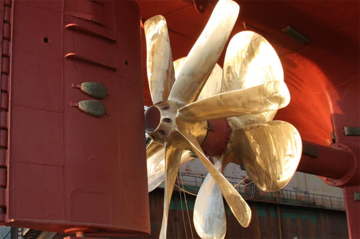
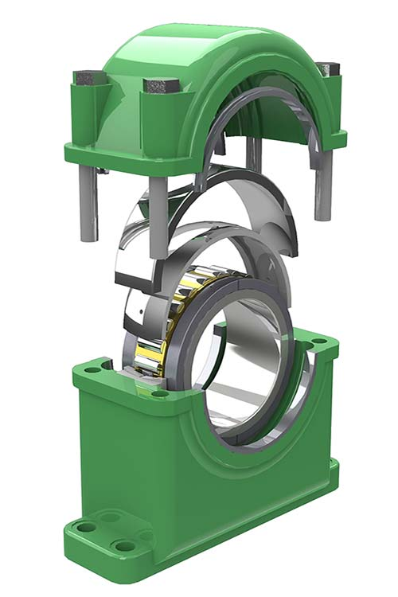
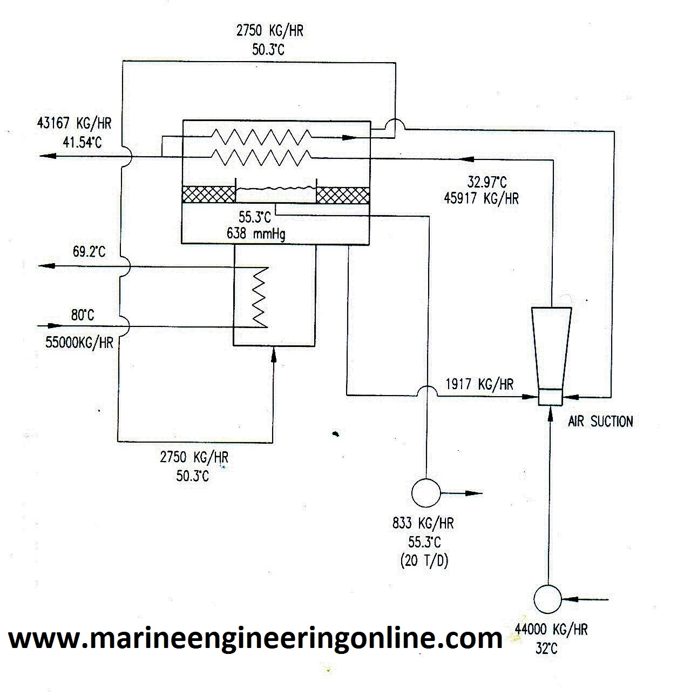
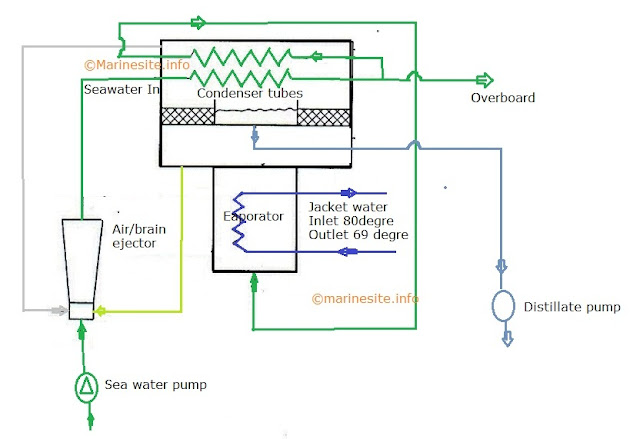
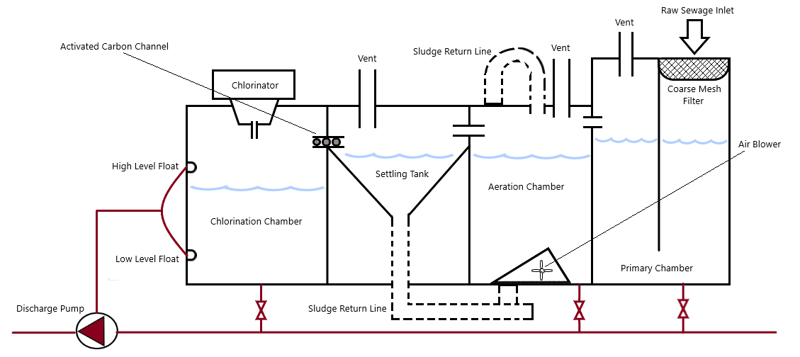
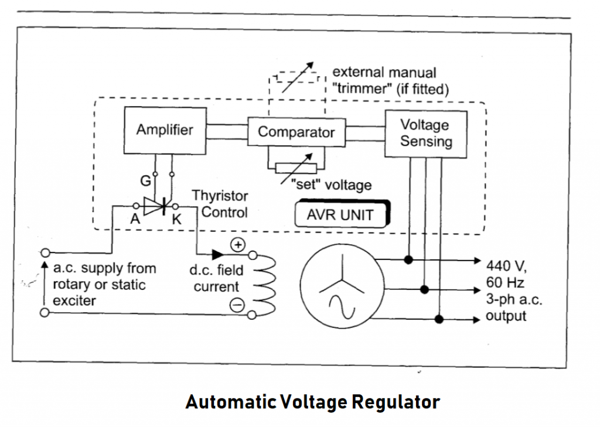

Questions and Answers
Q1(a) : A centrifugal pump cannot handle air, hence it has to be “primed” with the
handling liquid, but an IG blower also a centrifugal “pump” can easily handle air- justify the truth of the above statement.
Ans :
The statement highlights a key distinction between centrifugal pumps and IG (Induced Draft) blowers, both of which utilize centrifugal force but operate under different conditions.
Centrifugal Pumps:
- Priming Requirement: Centrifugal pumps need to be primed because they rely on the liquid being present to create the necessary suction for fluid movement. If air enters the pump, it can lead to cavitation, reducing efficiency and potentially damaging the pump.
- Fluid Dynamics: These pumps are designed to move liquids, and their impellers are optimized for liquid density and viscosity. Air, being compressible, can disrupt the flow characteristics, leading to poor performance.
IG Blowers:
- Handling Air: IG blowers are designed specifically for moving gases, including air. Their impellers and design facilitate the movement of compressible fluids without the need for priming.
- Operation: Unlike pumps, blowers create pressure to push gas through the system, making them effective for applications involving air or gas without the risk of cavitation.
Conclusion:
The statement is true because centrifugal pumps cannot effectively handle air due to their design and the need for priming, while IG blowers are built to manage gases, allowing them to operate efficiently without the same limitations.
Q1(b): Explain in simple terms the meaning of NPSH. Indicate on a NPSH vs flow
diagram the ideal/optimum flow rate for a centrifugal pump , justify your choice.
Ans :
NPSH Explained
NPSH (Net Positive Suction Head) is a measure of how much pressure is available to prevent cavitation in a pump. It is crucial for ensuring that the liquid entering the pump remains in liquid form and does not turn into vapor, which can cause damage and reduce efficiency.
- NPSH Available (NPSHa): This is the pressure available from the system at the pump’s inlet, expressed in meters or feet of liquid.
- NPSH Required (NPSHr): This is the minimum pressure needed at the pump inlet to avoid cavitation, as specified by the pump manufacturer. For optimal pump operation, NPSHa must always be greater than NPSHr.
NPSH vs. Flow Rate Diagram
On a typical NPSH vs. Flow Rate diagram:
- X-axis: Flow Rate (Q)
- Y-axis: NPSH (both NPSHa and NPSHr)#### Characteristics of the Diagram:
- NPSHr Curve: This curve generally increases as flow rate increases. As flow increases, the pump’s required suction head rises due to increased friction losses and higher velocities.
- NPSHa Line: This line may remain relatively constant or slightly decrease with increased flow due to system changes (like friction losses).
Ideal/Optimum Flow Rate
The ideal/optimum flow rate is typically found at a point where:
- The NPSHa line is above the NPSHr curve, ensuring adequate suction pressure.
- This point is often near the pump’s Best Efficiency Point (BEP), where the pump operates most efficiently, reducing energy costs and wear.
Justification
Choosing the flow rate at the intersection where NPSHa is comfortably above NPSHr ensures:
- Reduced Cavitation Risk: Minimizing cavitation protects the pump and maintains performance.
- Operational Efficiency: The pump operates within its optimal range, maximizing efficiency and longevity. This approach balances system performance and pump safety, which is critical for reliable operation.
Q2(a): On a shipboard alternator how are the following parameters controlled: voltage,
frequency, load.
Ans.
Voltage, frequency, and load are controlled on a shipboard alternator:
- Voltage Control:
- Controlled by adjusting the excitation current in the rotor windings.
- An Automatic Voltage Regulator (AVR) is used to maintain constant voltage.
- The AVR senses the output voltage and adjusts the field current accordingly.
- If voltage drops, the AVR increases field current, and vice versa.
- Frequency Control:
- Directly related to the rotational speed of the alternator.
- Controlled by adjusting the prime mover’s speed (usually a diesel engine on ships).
- A governor system maintains constant speed despite load variations.
- If frequency drops, the governor increases fuel to the engine to speed up, and vice versa.
- Load Control:
- Managed by the ship’s power management system (PMS).
- The PMS monitors total electrical demand and available generating capacity.
- It can start/stop additional generators as needed to meet demand.
- Load sharing between parallel generators is typically done using droop control or isochronous load sharing systems. Would you like me to elaborate on any of these points or provide more information on a specific aspect of shipboard alternator control?
Q2(b): In a 25KVA, 2000/200V single phase transformer, the iron and copper losses on full load are 350W and
400W respectively. Calculate the efficiency of the transformer at unity power factor and 0.8 power factor at full load.
Ans :
Certainly, I’ll walk you through the calculation of the transformer’s efficiency at both unity power factor and 0.8 power factor at full load. Let’s break this down step by step. Given information:
- Transformer rating: 25 KVA
- Voltage ratio: 2000/200V (10:1)
- Iron losses (constant): 350W
- Copper losses at full load: 400W Step 1: Calculate the output power at full load Full load output power = 25 KVA = 25,000 VA Step 2: Calculate efficiency at unity power factor (cos φ = 1) Efficiency = (Output Power) / (Output Power + Iron losses + Copper losses) × 100% = 25,000 / (25,000 + 350 + 400) × 100% = 25,000 / 25,750 × 100% = 0.9709 × 100% = 97.09% Step 3: Calculate efficiency at 0.8 power factor (cos φ = 0.8) At 0.8 power factor, the output power changes: Output Power = 25,000 VA × 0.8 = 20,000 W Efficiency = (Output Power) / (Output Power + Iron losses + Copper losses) × 100% = 20,000 / (20,000 + 350 + 400) × 100% = 20,000 / 20,750 × 100% = 0.9639 × 100% = 96.39% Therefore, the efficiency of the transformer is:
- At unity power factor (cos φ = 1): 97.09%
- At 0.8 power factor (cos φ = 0.8): 96.39% As we can see, the efficiency is slightly lower at 0.8 power factor compared to unity power factor. This is because at a lower power factor, the actual power output is less for the same amount of losses, resulting in lower overall efficiency.
Q2 (c ): You are the superintendent of a ship with a supply of 440V , 60Hz. But the dry dock supply is 440V
50Hz.would you accept this reduced frequency supply? If yes, what may be the effects on running machinery of your ship?
Ans :
As a ship superintendent, this is an important question to consider. Let’s analyze the situation and the potential effects of accepting the reduced frequency supply. Decision: In general, I would be cautious about accepting the 50 Hz supply, but it may be possible to use it with careful considerations and precautions. The decision would depend on several factors, including the specific equipment on board and the duration of the dry dock period. Potential effects on running machinery:
- Electric motors:
- Reduced speed: Motors will run about 17% slower (50/60 = 0.833)
- Increased current draw: Due to reduced impedance at lower frequency
- Potential overheating: Due to increased current and reduced cooling from slower fan speeds
- Pumps and fans :
- Reduced flow rates: Due to slower motor speeds- Potential issues with cooling systems and other critical pumps
- Transformers:
- Increased magnetizing current: May lead to overheating
- Potential core saturation: Could cause harmonic distortion
- Lighting:
- Fluorescent lights may flicker or not work properly
- Some electronic ballasts might not function correctly
- Electronics and control systems:
- Potential malfunctions in equipment designed specifically for 60 Hz
- Timing issues in systems that use line frequency for timing
- Power factor correction equipment:
- May not function correctly, leading to poor power factor
- Generators:
- Cannot be synchronized with the shore power supply Considerations before accepting:
- Duration of dry dock period: Short-term use might be acceptable, long-term could be problematic
- Critical systems: Identify which systems are essential and their frequency sensitivity
- Temporary frequency converters: Consider renting for critical equipment
- Manufacturer specifications: Check equipment ratings for 50 Hz operation
- Load reduction: Operate only essential equipment to minimize risks
- Monitoring: Implement close monitoring of equipment temperatures and performance
- Alternativepower sources: Consider using ship’s generators if extended use is required In conclusion, while it may be possible to accept the 50 Hz supply for short periods or with proper precautions, it’s not ideal and comes with significant risks. I would strongly consider alternatives such as frequency conversion equipment or using the ship’s own power generation if possible. If accepting the 50 Hz supply is unavoidable, I would implement a careful management plan to monitor and mitigate the risks to the ship’s machinery.
Q3(a): Ships using dual fuel (gas and liquid fuel) engines are becoming popular - discuss the advantages of these
engines.
Ans :
Dual fuel engines, which can operate on both gas (typically liquefied natural gas or LNG) and liquid fuels (such as marine diesel oil), have indeed become increasingly popular in the maritime industry. Let’s discuss the key advantages of these engines:
- Flexibility in fuel choice:
- Can switch between gas and liquid fuel based on availability and price
- Allows ships to comply with emission regulations in different regions
- Environmental benefits:
- Reduced emissions when running on gas, particularly: • Lower CO2 emissions (20-25% reduction compared to diesel) • Significantly reduced SOx emissions • Reduced NOx emissions • Almost zero particulate matter emissions
- Helps meet increasingly stringent environmental regulations (e.g., IMO 2020)
- Cost efficiency:
- Can take advantage of lower LNG prices when available
- Potential for reduced fuel costs over the long term
- Fuel security:
- Ability to operate on conventional liquid fuels provides a backup if LNG is unavailable
- Improved engine efficiency:- Gas operation often results in better thermal efficiency
- Reduced maintenance costs due to cleaner burning of gas fuel
- Future-proofing:
- Prepared for potential future regulations favoring cleaner fuels
- Can potentially use bio or synthetic LNG in the future
- Operational advantages:
- Smoother engine operation when running on gas
- Reduced lubrication oil consumption
- Extended range:
- Can switch to liquid fuel for longer voyages where LNG bunkering might be limited
- Lower maintenance costs:
- Cleaner combustion of gas leads to less wear on engine components
- Extended time between overhauls when operating on gas
- Potential for better cargo capacity:
- LNG’s higher energy density can sometimes allow for more efficient use of space
- Market advantages:
- Improved corporate image due to lower emissions
- May be preferred by environmentally conscious charterers
- Incentives and port benefits:
- Some ports offer reduced fees for cleaner ships
- Potential access to incentives or subsidies for cleaner technologies While dual fuel engines offer these significant advantages, it’s important to note that they also come with challenges such as higher initial costs, the need for specialized crew training, and the requirement for LNG fuel storage and handling systems. However, for many shipowners, the benefits outweigh these challenges, especially in light of tightening environmental regulations and the potential for long-term cost savings.
Q3(b): What is the regulation guiding these ships?
Ans :
The regulation of dual-fuel ships, particularly those using LNG, is governed by several international and regional bodies. The primary regulations guiding these ships are:
- International Maritime Organization (IMO) Regulations: a) International Code of Safety for Ships using Gases or other Low-flashpoint Fuels (IGF Code):
- Mandatory international code for ships using gas or other low-flashpoint fuels
- Covers design, construction, and operation of these ships
- Addresses safety concerns specific to gas-fueled ships b) MARPOL Annex VI:
- Regulates air pollution from ships
- Sets limits on sulfur oxide and nitrogen oxide emissions
- Indirectly encourages the use of cleaner fuels like LNG c) Energy Efficiency Design Index (EEDI):
- Promotes use of more energy-efficient equipment and engines
- Dual-fuel engines can help meet EEDI requirements
- Classification Societies’ Rules:
- Societies like DNV GL, Lloyd’s Register, and ABS have specific rules for gas-fueled ships
- Cover aspects like fuel storage, piping systems, and safety measures
- Regional Regulations:a) European Union:
- Directive 2014/94/EU on the deployment of alternative fuels infrastructure
- Sulfur Emission Control Areas (SECAs) in European waters b) United States:
- EPA regulations on emissions in US waters
- US Coast Guard regulations on LNG fuel systems
- International Code for the Construction and Equipment of Ships Carrying Liquefied Gases in Bulk (IGC Code):
- While primarily for LNG carriers, it’s relevant for fuel systems on dual-fuel ships
- International Convention for the Safety of Life at Sea (SOLAS):
- Chapter II-1, Part G specifically addresses ships using low-flashpoint fuels
- International Convention on Standards of Training, Certification and Watchkeeping for Seafarers (STCW):
- Includes specific training requirements for crew on gas-fueled ships
- ISO Standards:
- ISO 20519:2017 - Specification for bunkering of liquefied natural gas fueled vessels
- National Regulations:
- Many countries have their own regulations for ships operating in their waters
- Often align with or exceed international standards Key aspects covered by these regulations include:
- Fuel storage and handling systems
- Safety measures and emergency procedures
- Crew training and certification
- Emissions standards
- Bunkering procedures
- Ship design and construction standards Ship owners and operators must ensure compliance with these regulations, which can vary depending on the ship’s operating area and specific characteristics. Regular inspections and certifications are required to demonstrate ongoing compliance.
Q3(c ): Discuss the safety features of such engines ae per IACS.
Ans :
Certainly. The International Association of Classification Societies (IACS) has developed unified requirements and recommendations for safety features of dual-fuel engines, particularly those using gas as fuel. These safety features are designed to mitigate risks associated with gas fuel use on ships. Let’s discuss the key safety features as per IACS guidelines:
- Gas Fuel Supply System: a) Double-walled piping:
- Gas fuel pipes must be double-walled in engine rooms and other enclosed spaces
- The space between the inner and outer pipes is ventilated and monitored for leaks b) Automatic master gas valve:
- Automatically closes in case of gas leaks or system failures
- Can be manually operated from multiple locations c) Gas detection system:
- Continuous monitoring for gas leaks throughout the system
- Automatic shutdown of gas supply if leaks are detected
- Engine Safety Systems: a) Automatic purging system:
- Purges gas from the system when switching from gas to liquid fuel
- Ensures no gas remains in the system when not in useb) Cylinder gas injection valve:
- Designed to prevent gas leakage into the engine crankcase c) Crankcase oil mist detection:
- Monitors for oil mist, which could indicate a gas leak into the crankcase d) Exhaust gas monitoring:
- Detects unburned gas in the exhaust system
- Ventilation Systems: a) Increased ventilation in engine rooms:
- Ensures rapid dispersal of any gas leaks
- Ventilation system must have redundancy b) Gas-tight bulkheads:
- Separates gas-safe and gas-dangerous zones
- Fire Safety: a) Enhanced fire detection and extinction systems:
- Specific to the risks associated with gas fires b) Water spray systems:
- For cooling and fire prevention around gas storage and supply areas
- Gas Storage: a) Location and protection of fuel tanks:
- Specific requirements for tank location and protective measures b) Pressure relief systems:
- To safely vent gas in case of over-pressurization
- Control and Monitoring: a) Automated fuel management system:
- Monitors and controls gas pressure and temperature b) Emergency shutdown system (ESD):
- Rapidly shuts down and isolates the gas system in emergencies
- Electrical Equipment: a) Explosion-proof electrical equipment:
- Required in gas-dangerous zones b) Grounding and bonding:
- To prevent static electricity buildup
- Operational Procedures: a) Specific operational modes:
- Procedures for gas-only, liquid fuel-only, and dual-fuel operations b) Bunkering procedures:
- Strict safety protocols for LNG bunkering operations
- Crew Training: a) Specialized training requirements:
- For operation and maintenance of gas systems
- Emergency response procedures10. Redundancy: a) Dual-fuel capability itself as a safety feature:
- Ability to switch to liquid fuel if issues arise with the gas system
- Material Selection: a) Cryogenic-rated materials:
- For components that may come into contact with LNG These safety features are designed to work together to ensure the safe operation of dual-fuel engines. IACS requirements are typically incorporated into the rules of individual classification societies and often form the basis for national and international regulations. Ship designers, builders, and operators must ensure compliance with these safety features to obtain and maintain class certification for dual-fuel ships.
Q4(a): With reference to a large ‘2 stroke diesel engines’ exhaust valves the modern trend is to use “Nimonic”
type valve spindle. What special instruction will you issue to your chief engineer regarding grinding of this type of valve. Give a choice between “Nimonic” and “Duraspindle” valves which will you select for your vessel ; justify your choice.
Ans :
To address this question, I’ll first provide instructions for the chief engineer regarding grinding Nimonic valve spindles, then compare Nimonic and Duraspindle valves to justify a choice. Instructions for the Chief Engineer on grinding Nimonic valve spindles:
- Minimal grinding:
- Nimonic alloys are extremely hard and resistant to wear.
- Instruct to avoid excessive grinding, as it’s usually unnecessary and can reduce valve life.
- Specialized equipment:
- Use only high-quality grinding wheels specifically designed for Nimonic alloys.
- Ensure grinding machines are in excellent condition to prevent chattering or uneven grinding.
- Cooling during grinding:
- Maintain proper cooling to prevent overheating, which can affect the alloy’s properties.
- Use appropriate coolants recommended for Nimonic materials.
- Grinding angle:
- Strictly adhere to the manufacturer’s specifications for grinding angles.
- Typically, maintain a 30-degree angle on the seat face.
- Surface finish:
- Aim for a smooth, even finish without rough spots or grooves.
- Use progressively finer grits if necessary to achieve the required finish.
- Inspection:
- Carefully inspect the valve after grinding for any signs of cracking or unusual wear patterns.
- Dimensional checks:
- Measure the valve stem diameter and overall length after grinding to ensure they remain within tolerance.
- Record keeping:
- Maintain detailed records of all grinding operations, including measurements before and after.
- Training:
- Ensure all personnel involved in valve maintenance are properly trained in handling Nimonic materials. Choice between Nimonic and Duraspindle valves: For a large 2-stroke diesel engine, I would choose Nimonic valves over Duraspindle valves. Here’s the justification:
- Superior heat resistance:- Nimonic alloys (typically nickel-chromium-based) offer exceptional heat resistance, crucial for large 2-stroke engines operating at high temperatures.
- Longer lifespan:
- Nimonic valves generally last longer than Duraspindle valves, reducing the frequency of replacements and associated downtime.
- Better corrosion resistance:
- Nimonic alloys provide superior resistance to hot corrosion and oxidation, important in marine environments.
- Higher strength:
- Nimonic retains its strength at high temperatures better than most alternative materials.
- Reduced maintenance:
- The durability of Nimonic valves typically results in less frequent maintenance requirements.
- Fuel flexibility:
- Nimonic valves perform well with various fuel types, including heavy fuel oil, which is common in large marine engines.
- Industry trend:
- The question mentions that Nimonic is the “modern trend,” suggesting industry-wide acceptance and proven performance.
- Cost-effectiveness:
- While initially more expensive, the longer lifespan and reduced maintenance can make Nimonic valves more cost- effective in the long run.
- Proven track record:
- Nimonic valves have a long history of use in high-performance applications, including aerospace, giving confidence in their reliability. While Duraspindle valves (typically made of high-grade stainless steel with additional treatments) are a good option and may be less expensive initially, they generally don’t match the overall performance and longevity of Nimonic valves in large 2-stroke diesel engines. The choice of Nimonic valves aligns with the goal of maximizing engine reliability, performance, and overall cost- effectiveness, which are crucial factors in marine operations where downtime can be extremely costly.
Q4(b): Modern pistons employ rings with special constructional features and coatings. Discuss these features and
justify their use.
Ans :
Modern piston rings indeed employ special constructional features and coatings to improve engine performance, efficiency, and longevity. Let’s discuss these features and justify their use:
- Ring Profiles: a) Barrel-faced rings:
- Slightly curved outer surface
- Justification: Improves oil control and reduces friction b) Taper-faced rings:
- Angled face that helps scrape oil
- Justification: Enhances oil control and sealing c) Keystone rings:
- Trapezoidal cross-section
- Justification: Prevents ring sticking in high-temperature environments, common in diesel engines
- Ring Materials: a) Ductile iron:
- Base material for many rings- Justification: Good balance of strength and wear resistance b) Steel:
- Used for top rings in high-performance engines
- Justification: Higher strength and temperature resistance
- Coatings: a) Chrome plating:
- Hard chrome layer on the ring face
- Justification: Increases wear resistance and reduces friction b) Plasma spray coatings:
- Ceramic or metallic coatings applied via plasma spray
- Justification: Excellent wear resistance and can be customized for specific applications c) Physical Vapor Deposition (PVD) coatings:
- Thin, hard coatings like titanium nitride or diamond-like carbon (DLC)
- Justification: Extremely low friction and high wear resistance d) Nitriding:
- Surface hardening process
- Justification: Improves wear resistance without affecting core properties
- Ring Tension: a) Variable tension rings:
- Different tensions at different points around the ring
- Justification: Optimizes sealing and oil control while minimizing friction
- Multi-piece Construction: a) Two-piece oil control rings:
- Separate rails and expander
- Justification: Improves conformability to cylinder wall and oil control b) Three-piece oil control rings:
- Two rails and an expander
- Justification: Even better oil control and adaptability to cylinder distortion
- Surface Treatments: a) Phosphate coatings:
- Chemical treatment of the ring surface
- Justification: Improves break-in characteristics and corrosion resistance b) Molybdenum inlays:
- Soft molybdenum inserts in ring face
- Justification: Provides solid lubrication under extreme conditions
- Ring End Gaps: a) Step joints:
- Stepped end gap design
- Justification: Improves gas sealing b) Hook joints:
- Interlocking end gap design
- Justification: Further enhances gas sealing, especially in large diesel engines Justification for these features:
- Improved Sealing:- Better sealing between the piston and cylinder wall reduces blow-by, improving engine efficiency and reducing emissions.
- Reduced Friction:
- Lower friction decreases wear, improves fuel efficiency, and reduces energy loss.
- Enhanced Oil Control:
- Better oil control prevents excessive oil consumption, reduces emissions, and prevents carbon buildup.
- Increased Durability:
- Wear-resistant coatings and materials extend the life of both the rings and the cylinder liner.
- Higher Temperature Resistance:
- Allows engines to operate at higher temperatures, improving efficiency.
- Improved Conformability:
- Rings that conform better to the cylinder wall maintain better sealing even as the engine wears.
- Reduced Emissions:
- Better sealing and oil control contribute to lower emissions, helping meet stringent environmental regulations.
- Fuel Efficiency:
- Reduced friction and better sealing contribute to improved fuel efficiency.
- Extended Service Intervals:
- More durable rings allow for longer periods between overhauls, reducing maintenance costs and downtime.
- Performance in Extreme Conditions:
- Specialized coatings and materials allow rings to perform well in the harsh conditions of modern high-output engines. These advanced features and coatings represent significant engineering efforts to optimize the critical interface between the piston and cylinder wall. By addressing multiple aspects of ring performance simultaneously, these technologies contribute to the overall improvement in engine performance, efficiency, and longevity that we see in modern engines.
Q4(c ): what are the parts in a large 2 stroke marine diesel engine that require regular replacement; what
quantity of each of these parts would you keep on board, assuming a lead time of 3 months.
Ans :
In a large 2-stroke marine diesel engine, several critical components require regular replacement to ensure optimal performance and reduce the risk of major failures. The frequency of replacement depends on the engine hours, operational conditions, and maintenance schedules. Given the 3-month lead time for parts, the quantities should ensure that maintenance can be performed without delays. Here’s a list of commonly replaced parts and suggested quantities to keep on board:
1. Cylinder Liners
- Function: Houses the piston and provides the combustion chamber.
- Replacement Frequency: Every 20,000-30,000 running hours, depending on wear.
- Quantity on Board: 1-2 (depending on the number of cylinders and wear patterns).
2. Piston Rings
- Function: Ensures a tight seal between the piston and cylinder, reducing blow-by and maintaining compression.
- Replacement Frequency: Every 10,000-15,000 running hours or during piston overhauls.
- Quantity on Board: 1 complete set per cylinder + 1 spare set.
3. Pistons
- Function: Compresses the air-fuel mixture for combustion.
- Replacement Frequency: When wear limits are reached or during major overhauls (typically every 30,000- 40,000 running hours).
- Quantity on Board: 1-2 spare pistons.
4. Exhaust Valves and Valve Seats
- Function: Controls the exhaust gas flow out of the cylinder.
- Replacement Frequency: Typically every 10,000-20,000 hours depending on the condition.- Quantity on Board: 1 set of valves and seats per cylinder + 1 spare set.
5. Fuel Injectors (Fuel Valves)
- Function: Injects fuel into the cylinder at high pressure.
- Replacement Frequency: Every 5,000-10,000 hours, or based on performance checks.
- Quantity on Board: 1-2 spare injectors per cylinder.
6. Connecting Rod Bearings
- Function: Allows smooth movement of the connecting rod on the crankshaft.
- Replacement Frequency: Typically replaced during piston overhauls or when wear is detected (every 20,000- 30,000 hours).
- Quantity on Board: 1 set per cylinder + 1 spare set.
7. Crankshaft Main Bearings
- Function: Supports the crankshaft and allows it to rotate smoothly.
- Replacement Frequency: Every 40,000-60,000 hours (during major overhauls).
- Quantity on Board: 1 spare set.
8. Turbocharger Components (Turbine Blades, Bearings)
- Function: Increases the engine’s efficiency by forcing more air into the cylinders.
- Replacement Frequency: Inspected and overhauled every 20,000-30,000 hours; parts replaced as needed.
- Quantity on Board: 1 set of critical turbocharger spares (bearings, seals, and blades).
9. Oil and Fuel Filters
- Function: Removes contaminants from the oil and fuel systems.
- Replacement Frequency: Regularly, every 500-1,000 hours, or according to the engine manual.
- Quantity on Board: Adequate stock for 3 months of operation + 10% extra.
10. Gaskets and Seals
- Function: Ensures a tight seal between engine components, preventing leakage.
- Replacement Frequency: Replaced during overhauls and whenever disassembly is required.
- Quantity on Board: 1 complete set for major overhauls + additional specific gaskets based on common maintenance tasks.
11. O-Rings
- Function: Sealing in various parts of the engine such as injectors, cylinder heads, and pumps.
- Replacement Frequency: Every time components are disassembled.
- Quantity on Board: Several sets for each type of O-ring in the engine.
12. Fuel Pump Components (Plunger and Barrel)
- Function: Pumps fuel to the injectors at high pressure.
- Replacement Frequency: Every 10,000-20,000 hours, depending on condition.
- Quantity on Board: 1 spare plunger and barrel set per cylinder.
13. Air Filters
- Function: Filters air entering the engine, preventing contaminants from causing damage.
- Replacement Frequency: Every 2,000-3,000 hours.
- Quantity on Board: 2 sets.
14. Cooler Elements (Intercooler, Lube Oil Cooler Tubes)
- Function: Maintains optimal engine temperature by cooling the air and oil.
- Replacement Frequency: Inspected regularly and replaced during overhauls if fouling or damage is found.
- Quantity on Board: 1 spare cooler element for each type (intercooler, lube oil cooler).
15. Camshaft Roller Bearings and Tappets
- Function: Facilitates valve timing and fuel injection timing.
- Replacement Frequency: Every 30,000-40,000 hours or as per condition monitoring.
- Quantity on Board: 1 set per cylinder.
16. Water Pump Impellers and Bearings
- Function: Circulates coolant through the engine.
- Replacement Frequency: Replaced as per wear or when leaks are detected.
- Quantity on Board: 1 spare impeller and bearing set.### Additional Factors to Consider:
- Operating conditions: If the engine operates in harsh conditions (e.g., heavy loads, high ambient temperatures), spares might wear out more quickly.
- Engine Manufacturer’s Recommendations: The spare part inventory should align with the manufacturer’s guidelines for planned maintenance and spares stock. This approach ensures sufficient redundancy, accounting for typical wear, unexpected issues, and the lead time required for resupplying critical parts. Q5(a): what are the factors responsible for the formation of Nox?
Ans :
Nitrogen oxides (NOx) are formed during the combustion process in diesel engines, including large 2-stroke marine diesel engines. Several factors influence the formation of NOx, primarily due to the high temperatures and chemical reactions that occur in the combustion chamber. The key factors responsible for the formation of NOx are:
1. High Combustion Temperature
- Primary Factor: NOx formation increases exponentially with higher combustion temperatures. When air (which contains nitrogen and oxygen) is exposed to temperatures above 1,200°C (2,192°F), nitrogen in the air reacts with oxygen to form NOx.
- Effect: The higher the peak temperature in the combustion chamber, the more NOx is produced. This is why engines operating at high load or high compression ratios tend to produce more NOx.
2. Excess Oxygen (Air-to-Fuel Ratio)
- Influence: A high air-to-fuel ratio (lean mixture) provides excess oxygen, which promotes the formation of NOx, especially at high temperatures.
- Effect: When the combustion is lean (i.e., more air than necessary for complete combustion of fuel), the excess oxygen reacts with nitrogen, increasing NOx emissions.
3. Peak Pressure in the Combustion Chamber
- Influence: Higher peak pressures in the combustion chamber are typically associated with more complete combustion and higher temperatures.
- Effect: The higher the pressure during combustion, the more likely NOx will form due to the increased temperature and reaction rates.
4. Residence Time at High Temperature
- Influence: The duration that the combustion gases remain at high temperatures also affects NOx formation. The longer the hot gases are exposed to high temperatures, the more NOx is generated.
- Effect: Engines with longer combustion durations (slow burning) tend to have higher NOx emissions, while engines that achieve rapid combustion can reduce NOx formation.
5. Fuel Type and Composition
- Influence: The composition of the fuel can impact NOx formation. Fuels with higher energy density or with certain additives can cause hotter combustion.
- Effect: Higher energy fuels or fuels that promote higher combustion temperatures will result in increased NOx production.
6. Combustion Timing (Injection Timing)
- Influence: The timing of fuel injection plays a critical role in determining peak temperatures and pressures in the cylinder.
- Effect: Early fuel injection results in more time for combustion and can lead to higher peak temperatures, which increases NOx formation. Delayed injection can lower peak temperatures and reduce NOx emissions but may result in higher particulate emissions.
7. Turbocharging and Air Pressure
- Influence: Turbocharging increases the amount of air (oxygen) in the combustion chamber, which can increase the combustion temperature and promote NOx formation.
- Effect: While turbocharging improves engine efficiency, it can also lead to higher NOx emissions due to the elevated pressure and temperature in the combustion chamber.
8. Exhaust Gas Recirculation (EGR)
- Influence: EGR systems reduce the formation of NOx by recirculating a portion of the exhaust gases back into the combustion chamber, which lowers the oxygen concentration and temperature.- Effect: While not a factor that causes NOx formation, the lack of an EGR system in older engines or systems not functioning properly can lead to increased NOx emissions.
9. Engine Load
- Influence: NOx formation is typically higher at higher engine loads because of increased fuel consumption and higher combustion temperatures.
- Effect: Operating an engine at full load or high power output increases NOx formation due to the elevated temperature and pressure inside the cylinder.
10. Fuel Spray Characteristics and Atomization
- Influence: The way fuel is atomized and mixed with air in the combustion chamber affects how complete and efficient combustion is, which in turn impacts temperature.
- Effect: Poor fuel atomization can lead to incomplete combustion or localized high-temperature zones, which increases NOx formation.
11. Scavenging Efficiency
- Influence: Efficient scavenging (removal of exhaust gases and intake of fresh air) affects combustion conditions and chamber temperatures.
- Effect: Poor scavenging can leave hot exhaust gases in the cylinder, which, combined with fresh oxygen from intake air, may result in higher localized temperatures, increasing NOx formation. By managing these factors, marine diesel engines can be optimized to minimize NOx emissions. However, reducing NOx often comes at the expense of other pollutants (such as particulates), requiring a balance between emissions control strategies like selective catalytic reduction (SCR) and exhaust gas recirculation (EGR).
Q5(b): Discuss the difference in Nox generated in a compression ignition engine and in a high pressure boiler
burning HFO.
Ans :
The generation of nitrogen oxides (NOx) in a compression ignition engine (such as a large 2-stroke marine diesel engine) differs significantly from NOx formation in a high-pressure boiler burning heavy fuel oil (HFO), due to variations in combustion processes, temperatures, pressures, and fuel characteristics. Below is a discussion of the differences in NOx generation between these two systems.
1. Combustion Process
- Compression Ignition Engine:
- In a compression ignition engine (e.g., a marine diesel engine), combustion occurs when fuel is injected into high- temperature, high-pressure air that has been compressed in the cylinder. The fuel auto-ignites due to the high temperature of the compressed air, and combustion happens rapidly.
- This process results in localized high-temperature zones (around the fuel spray) where NOx is formed due to the high temperature and the presence of oxygen and nitrogen in the air.
- High-Pressure Boiler (Burning HFO):
- In a high-pressure boiler, the combustion of heavy fuel oil occurs in a furnace where fuel and air are mixed and burned over a longer period, compared to the rapid combustion in an engine.
- The combustion is more uniform and steady, though the temperatures are still high. Boiler combustion involves pre-mixing fuel and air in a controlled environment, but the combustion duration is longer, allowing more gradual heat release.
2. Peak Combustion Temperature
- Compression Ignition Engine:
- In a diesel engine, peak temperatures can reach up to 2,000-2,500°C in localized areas near the flame front, particularly around the fuel injector. These high peak temperatures are a major factor contributing to NOx formation.
- The sharp temperature rise due to rapid combustion and high-pressure conditions leads to significant NOx generation.
- High-Pressure Boiler:
- In high-pressure boilers, peak combustion temperatures are typically lower than those in a compression ignition engine, ranging from 1,300-1,600°C. However, boilers may operate with large volumes of air and have a longer residence time at high temperatures, which can also promote NOx formation.
- Even though the temperatures are slightly lower, the larger combustion volume and slower, more uniform heat release can still result in considerable NOx emissions.### 3. Air-to-Fuel Ratio and Oxygen Availability
- Compression Ignition Engine:
- Diesel engines typically operate with a variable air-to-fuel ratio, depending on load and speed. At higher loads, the engine runs with an excess of air (lean mixture), which can increase the amount of oxygen available for NOx formation.
- The air-to-fuel ratio is dynamically controlled, and during lean combustion, more oxygen is available for nitrogen in the air to react with, promoting higher NOx formation.
- High-Pressure Boiler:
- Boilers burning HFO operate with a relatively constant air-to-fuel ratio. The excess air is usually controlled to ensure complete combustion of the heavy fuel oil, avoiding unburned fuel and soot. However, the presence of excess oxygen in the furnace also promotes NOx formation.
- Higher oxygen availability, combined with a steady combustion process, can lead to continuous NOx production over time.
4. Fuel Characteristics
- Compression Ignition Engine:
- Diesel engines typically use distillate fuels (e.g., marine gas oil) or low-sulfur heavy fuel oil (LSHFO). These fuels have a high cetane number, leading to rapid combustion and high localized temperatures, which promotes NOx formation.
- The composition of the fuel influences the flame temperature and combustion efficiency. Low-sulfur fuels tend to burn more cleanly but can still generate high levels of NOx due to the high compression ratios in the engine.
- High-Pressure Boiler (Burning HFO):
- High-pressure boilers often burn heavy fuel oil (HFO), which is a residual fuel with a higher sulfur content and lower combustion quality than distillate fuels. The combustion of HFO produces a lower flame temperature compared to lighter fuels.
- The combustion of HFO can generate more particulate matter and soot, but due to the longer combustion time, the NOx production is typically lower than in a diesel engine. However, in boilers operating with high excess air, NOx production can still be significant.
5. NOx Formation Mechanism
- Compression Ignition Engine:
- In diesel engines, NOx is primarily formed through the thermal NOx mechanism, where high temperatures cause nitrogen and oxygen in the intake air to react and form nitrogen oxides.
- The short duration of combustion and high peak temperatures lead to rapid NOx formation, mostly concentrated around the fuel spray zones.
- High-Pressure Boiler:
- In boilers, NOx formation can occur through thermal NOx, but because HFO contains bound nitrogen, fuel NOx is also a significant contributor. Fuel NOx occurs when nitrogen compounds in the fuel react with oxygen during combustion.
- The larger combustion volume and lower peak temperatures in boilers result in more uniform NOx formation, but the fuel-bound nitrogen in HFO can still cause significant emissions.
6. Residence Time at High Temperature
- Compression Ignition Engine:
- The residence time at high temperatures in a diesel engine is relatively short, typically within milliseconds, as the combustion process is rapid. However, the high temperatures are sufficient to form NOx in this short duration.
- High-Pressure Boiler:
- In a boiler, the residence time is much longer (seconds to minutes), allowing more complete combustion but also increasing the opportunity for NOx to form, particularly from both thermal and fuel-bound nitrogen sources.
7. NOx Reduction Strategies
- Compression Ignition Engine:
- Diesel engines typically employ Exhaust Gas Recirculation (EGR) and Selective Catalytic Reduction (SCR) systems to reduce NOx emissions.
- EGR reduces the oxygen concentration and combustion temperature, while SCR reduces NOx in the exhaust stream by injecting urea.
- High-Pressure Boiler:
- In boilers, NOx reduction strategies include low-NOx burners, which reduce peak flame temperatures, and flue gas recirculation (FGR), which reduces the oxygen concentration and flame temperature.- SCR can also be used in large-scale boilers to treat exhaust gases and reduce NOx emissions.
Summary of Differences:
| Factor | Compression Ignition Engine | High-Pressure Boiler |
|---|---|---|
| Combustion Process | Rapid, localized combustion | Uniform, steady combustion |
| Peak Temperature | Higher (up to 2,500°C) | Lower (1,300-1,600°C) |
| Air-to-Fuel Ratio | Variable, often lean | Controlled, constant |
| Fuel Characteristics | Distillates or LSHFO | Heavy Fuel Oil (HFO) |
| NOx Formation | Mainly thermal NOx | Thermal and fuel NOx |
| Residence Time | Short | Long |
| NOx Reduction Strategies | EGR, SCR | Low-NOx burners, FGR, SCR |
| In summary, compression ignition engines tend to generate more thermal NOx due to their higher peak combustion | ||
| temperatures and shorter combustion durations, while high-pressure boilers burning HFO can generate both **thermal | ||
| and fuel NOx** over a longer, more uniform combustion process. | ||
| Q5(c ): Introduction of water into the combustion area reduces Nox - justify this statement and discuss various | ||
| methods that use this principle of Nox reduction. |
Ans :
The introduction of water into the combustion area reduces NOx emissions because water lowers the combustion temperature, which is a key factor in the formation of nitrogen oxides (NOx). NOx forms mainly through the thermal NOx mechanism, where nitrogen and oxygen in the air combine at high temperatures, typically above 1,200°C (2,192°F). By introducing water into the combustion process, the temperature is reduced, slowing the formation of NOx. This principle is widely applied in diesel engines and boilers to meet stringent NOx emission standards.
Justification: How Water Reduces NOx Formation
- Heat Absorption and Temperature Reduction:
- When water is introduced into the combustion chamber, either in liquid or vapor form, it absorbs a significant amount of heat as it vaporizes. This process reduces the peak combustion temperature.
- The reduced temperature limits the thermal NOx formation because the reaction between nitrogen and oxygen is highly temperature-sensitive, increasing exponentially with higher temperatures.
- Dilution of Combustion Gases:
- Water or steam displaces some of the oxygen and nitrogen in the combustion area, effectively diluting the air-fuel mixture. This reduces the concentration of oxygen available for combustion, lowering the flame temperature.
- This dilution also reduces the amount of nitrogen in the flame, which limits the potential for nitrogen to react with oxygen, further reducing NOx formation.
- Slower Combustion Process:
- The presence of water slows the combustion reaction, extending the time it takes for fuel to burn. This more gradual combustion process typically results in lower peak temperatures, reducing NOx formation.
- Slower combustion also distributes the heat more evenly, avoiding localized high-temperature zones that are prone to NOx generation.
Methods Using Water for NOx Reduction
Several technologies and techniques utilize the introduction of water to reduce NOx emissions in internal combustion engines and high-pressure boilers. The most common methods include:
1. Water Injection
- Description: Water injection involves directly injecting water into the combustion chamber, either as a fine mist or in combination with the fuel.
- Mechanism: The water evaporates as it absorbs heat from the combustion process, reducing the temperature and diluting the combustion mixture. This lowers the peak flame temperature and reduces NOx formation.
- Application: Water injection is often used in high-performance engines (including marine diesel engines) to control NOx. In marine engines, water can be injected into the air intake or directly into the cylinder.
- Advantages: Simple and effective method to reduce NOx without significantly affecting engine performance.- Challenges: Requires a reliable water supply and proper control systems to avoid over-cooling, which could affect combustion efficiency.
2. Water-in-Fuel Emulsions (WiFE)
- Description: In this method, water is emulsified with fuel to form a water-fuel mixture. The fuel and water are finely mixed, and the emulsion is then injected into the combustion chamber.
- Mechanism: The water in the emulsion evaporates during combustion, absorbing heat and reducing the combustion temperature. This evaporation also promotes finer atomization of the fuel, leading to better mixing and combustion efficiency.
- Application: Used in marine engines and stationary diesel generators. WiFE is effective at reducing NOx while maintaining fuel efficiency.
- Advantages: Simple implementation and the water helps in reducing fuel viscosity, improving atomization and combustion.
- Challenges: Emulsions must be stable and may require special emulsifying agents or equipment to maintain homogeneity. Care must be taken to avoid engine corrosion due to water content.
3. Humid Air Motor (HAM)
- Description: This method involves adding water vapor or steam to the intake air before it enters the combustion chamber. The air is humidified by passing it through a water-saturated environment.
- Mechanism: The added humidity lowers the combustion temperature and increases the specific heat capacity of the intake air. The result is a lower peak flame temperature, which reduces NOx formation.
- Application: Humid air motors are used in large marine engines, as well as in some stationary power plants.
- Advantages: The humidification process is controllable and can be adjusted according to engine load and operating conditions.
- Challenges: Requires additional equipment to produce and manage the humid air, and the system may require maintenance to ensure reliability.
4. Exhaust Gas Recirculation (EGR) with Water Injection
- Description: EGR is a method where part of the exhaust gas is recirculated back into the intake air to reduce NOx. Combining EGR with water injection enhances NOx reduction.
- Mechanism: Exhaust gases, which contain water vapor and CO2, reduce the oxygen concentration in the combustion chamber, lowering the flame temperature. When combined with water injection, the cooling effect is further amplified, reducing NOx formation significantly.
- Application: Common in both marine diesel engines and land-based engines. The addition of water to the EGR process provides enhanced control over NOx emissions.
- Advantages: More effective NOx reduction than EGR alone. The water further cools the intake gases, increasing efficiency.
- Challenges: Increased complexity and maintenance due to the need for water injection and EGR components. Proper control of the water and gas mixture is essential to avoid issues such as engine knocking or increased particulate emissions.
5. Steam Injection
- Description: In steam injection, steam is directly injected into the combustion chamber along with fuel.
- Mechanism: Steam absorbs a significant amount of heat as it mixes with the combustion gases, reducing the flame temperature and diluting the fuel-air mixture, both of which reduce NOx formation.
- Application: Steam injection is often used in power plants and some industrial boilers to control NOx emissions.
- Advantages: Steam is readily available in many industrial settings, making it a convenient option for NOx reduction.
- Challenges: Requires precise control of steam flow rates to avoid excessive cooling, which could lead to incomplete combustion or other issues.
6. Wet Combustion or Water-Cooled Combustion Chambers
- Description: This method involves injecting water directly into the combustion chamber or using water-cooled chambers to reduce the overall temperature of the combustion process.
- Mechanism: Water absorbs the excess heat and reduces the peak temperature in the combustion zone, thereby limiting the formation of NOx.
- Application: Used in certain gas turbines and stationary engines, as well as large marine engines.
- Advantages: Can be integrated into the engine design to provide a consistent method for reducing NOx emissions.
- Challenges: Requires careful engineering to ensure water does not interfere with combustion quality. —### Summary of NOx Reduction Methods Using Water
Conclusion:
The introduction of water into the combustion process is an effective way to reduce NOx emissions by lowering peak combustion temperatures, slowing the combustion reaction, and diluting the reactants. Each method of water introduction has its own advantages and challenges, but all rely on the basic principle that cooler combustion temperatures lead to lower NOx formation. These techniques are widely applied in marine engines, power plants, and industrial boilers to meet increasingly stringent environmental regulations. Q5(d): State other Nox reduction method being used in the shipping industry which you shall select for your fleet.
Ans :
In the shipping industry, various NOx reduction methods are being employed to meet International Maritime Organization (IMO) regulations, particularly the requirements of MARPOL Annex VI, which sets limits on NOx emissions based on engine size and ship type. These methods can be used alone or in combination to achieve compliance. Below are the key NOx reduction technologies, along with a recommendation for selecting the most appropriate method for your fleet:
1. Selective Catalytic Reduction (SCR)
- Description: SCR is a post-combustion technology that reduces NOx in the exhaust gases by injecting a reductant (typically urea or ammonia), which reacts with NOx over a catalyst to produce nitrogen (N₂) and water vapor (H₂O).
- Mechanism: The SCR system is installed in the exhaust line after the engine, and the urea is injected into the exhaust stream where it converts NOx into harmless nitrogen and water through a catalytic reaction.
- Application: Widely used in marine diesel engines, particularly in Tier III-compliant vessels operating in Emission Control Areas (ECAs) where NOx emissions are strictly regulated.- Advantages:
- Can reduce NOx emissions by up to 90%.
- Proven and reliable technology, widely accepted for large marine engines.
- Challenges:
- Requires storage of urea and a dosing system.
- Additional equipment adds complexity, weight, and space requirements.
- Recommendation: SCR is a highly effective and reliable method for NOx reduction, making it a strong candidate for vessels operating in ECAs or regions with stringent NOx regulations.
2. Exhaust Gas Recirculation (EGR)
- Description: EGR recirculates a portion of the engine’s exhaust gases back into the intake air to reduce the oxygen content and lower the combustion temperature, thereby reducing NOx formation.
- Mechanism: By diluting the intake air with exhaust gases, the oxygen concentration is reduced, leading to cooler combustion and less thermal NOx formation.
- Application: Common in marine engines that need to meet Tier III NOx standards. EGR can be combined with other systems like water injection for additional NOx reduction.
- Advantages:
- Reduces NOx emissions by up to 50%.
- Does not require external chemicals like urea, reducing operational costs.
- Challenges:
- Requires complex control systems and maintenance of the EGR system.
- Can lead to increased soot and particulate matter emissions, necessitating additional treatment like scrubbers or particulate filters.
- Recommendation: EGR is suitable for engines that already have advanced emissions control systems but may not be as effective as SCR in high NOx reduction applications.
3. Low-NOx Combustion Technologies (Miller Cycle and Two-Stage Turbocharging)
- Miller Cycle:
- Description: The Miller Cycle is a modification of the engine timing, where the intake valve closes earlier during the compression stroke, reducing the effective compression ratio. This results in a lower combustion temperature and reduced NOx formation.
- Application: Often used in combination with turbocharging in marine engines.
- Advantages:
- Reduces NOx emissions at the source by lowering combustion temperatures.
- Does not require additional external systems like SCR or EGR.
- Challenges:
- May reduce engine power output, affecting overall performance.
- Two-Stage Turbocharging:
- Description: Two-stage turbocharging involves using two turbochargers in series, allowing for better air intake management and more precise control of combustion conditions, leading to lower NOx emissions.
- Advantages:
- Improves engine efficiency while lowering NOx.
- Challenges:
- Increased complexity and cost of engine design.
- Recommendation: Low-NOx combustion technologies are suitable for new-build ships or engines being retrofitted with advanced control systems. They provide an effective way to reduce NOx without relying on after- treatment systems, though they may not achieve the same level of NOx reduction as SCR or EGR.
4. LNG (Liquefied Natural Gas) as Fuel
- Description: Using LNG as a fuel significantly reduces NOx emissions, as natural gas burns more cleanly than conventional marine fuels like heavy fuel oil (HFO) or marine diesel oil (MDO). NOx emissions are naturally lower because of the lower combustion temperatures and the cleaner nature of the fuel.
- Application: LNG-powered vessels are becoming increasingly popular, especially in new-builds for short-sea shipping and ferries.
- Advantages:
- Reduces NOx emissions by up to 85%.
- Also reduces SOx and particulate matter emissions, contributing to overall environmental compliance.
- Challenges:
- Requires specialized infrastructure for LNG storage and bunkering.
- Limited availability of LNG refueling stations globally.
- Recommendation: LNG is ideal for fleets where infrastructure exists or is being developed. It offers significant NOx reduction and future-proofs ships against upcoming emissions regulations. However, converting existing vessels toLNG can be costly.
5. Dual-Fuel Engines
- Description: Dual-fuel engines can run on both conventional marine fuels (e.g., HFO, MDO) and alternative fuels like LNG or methanol. When running on LNG, these engines produce significantly lower NOx emissions.
- Application: Dual-fuel engines are being installed on new ships and retrofitted to existing ships to allow them to switch between fuels depending on availability and emission regulations.
- Advantages:
- Flexibility to switch between fuels based on cost and emissions compliance.
- Significant reduction in NOx when running on LNG or other cleaner fuels.
- Challenges:
- Higher initial capital cost for dual-fuel systems.
- LNG infrastructure limitations.
- Recommendation: Dual-fuel engines provide flexibility and future compliance with emission regulations. They are a good choice for vessels that will operate in regions with available LNG infrastructure and emission control areas.
Recommended NOx Reduction Method for Your Fleet
Given that your fleet likely operates in both Emission Control Areas (ECAs) and non-ECA regions, the best NOx reduction method would depend on your specific operational profile. For a fleet that requires reliable and significant NOx reduction, I would recommend:
Selective Catalytic Reduction (SCR):
- Why SCR: SCR provides the highest NOx reduction potential (up to 90%) and is highly effective in meeting the stringent Tier III NOx regulations. It is widely used in the shipping industry and has a proven track record. Given the 3- month lead time for parts and operational requirements, SCR can be integrated into both new builds and retrofitted vessels in your fleet.
- Other Considerations:
- EGR can be considered for engines that are more suitable for internal modifications, but SCR is typically more effective in NOx reduction.
- Dual-fuel engines or LNG-powered ships are long-term solutions but require significant investment in infrastructure and retrofitting, which may not be immediately feasible for an existing fleet.
Conclusion:
For your fleet, Selective Catalytic Reduction (SCR) would likely be the most practical and effective method for reducing NOx emissions while complying with international regulations. It offers significant NOx reduction and is a well-established technology in the maritime industry, providing reliability and compliance across a wide range of operating conditions. Q6(a): Following are some of the CO2 abatement measures / methods available: Dual fuel engines, voyage execution, contra rotating propellers, grim vane wheel , electronic engines , cold ironing, weather routing, propeller condition, speed reduction( slow steaming), waste heat recovery, hull condition, fuel cells as auxillary engines and engine performance monitoring. Tabulate them under the categories of positive ” cost per ton CO2 averted” or negative “cost per ton CO2 averted”.
Ans :
The cost per ton of CO₂ averted for various CO₂ abatement measures depends on multiple factors, including fuel efficiency, operating costs, maintenance, and capital investments. Measures that generate cost savings or additional revenue are categorized under negative “cost per ton CO₂ averted” (i.e., they result in a net financial benefit while reducing CO₂ emissions). Those that involve higher costs with less direct savings are categorized under positive “cost per ton CO₂ averted”.
Tabulation of CO₂ Abatement Measures:|
Key Points:
- Negative “Cost per Ton CO₂ Averted”: These measures generally result in net savings, either by reducing fuel consumption, improving operational efficiency, or extending the lifespan of equipment. Most operational adjustments, like slow steaming, voyage execution, and weather routing, fall into this category because they require minimal upfront costs but yield significant fuel savings.
- Positive “Cost per Ton CO₂ Averted”: These measures involve higher capital investments, such as dual-fuel engines, shore power (cold ironing), or contra-rotating propellers. Although they offer long-term environmental benefits and may provide fuel savings, the initial cost is high, leading to a positive cost per ton of CO₂ averted.### Conclusion: Most of the operational measures that focus on optimizing existing systems result in negative cost per ton of CO₂ averted, meaning they provide both environmental and financial benefits over time. High-tech solutions and large-scale retrofits may involve high initial costs but still play an essential role in reducing CO₂ emissions, especially as regulations tighten in the shipping industry. Q6(b): Explain how a ‘grim vane wheel’ and a ‘rubber bulb system with fins’ achieve CO2 abatement , including advantages and disadvantages, if any.
Ans :
Grim Vane Wheel

1. How It Works:
The Grim Vane Wheel is an energy-saving device installed just behind the ship’s propeller. It is designed to capture and utilize the rotational energy left in the water flow after it passes through the propeller. The device consists of a set of rotating blades that are connected to the ship’s shaft and help to:
- Recover rotational energy from the swirling water generated by the propeller, converting it into forward thrust.
- Reduce energy loss by straightening the water flow, which decreases the turbulence and swirl in the wake.
2. CO₂ Abatement Mechanism:
By capturing and using the energy that would otherwise be lost in the wake, the Grim Vane Wheel improves the overall propulsion efficiency of the ship. This improvement leads to a reduction in fuel consumption, which directly reduces CO₂ emissions. Even a small percentage gain in propulsion efficiency can lead to significant fuel savings and lower CO₂ emissions over time, especially on long voyages.
3. Advantages:
- Fuel Efficiency: Improves fuel efficiency by up to 3-5%, leading to reduced CO₂ emissions.
- Simple Retrofitting: The device can be retrofitted to existing ships without major structural changes, making it accessible to a wide range of vessels.
- Reduced Propeller Wear: Helps smooth the water flow, reducing the stress on the propeller and potentially extending its lifespan.
4. Disadvantages:
- Installation Cost: While not as expensive as some other propulsion efficiency measures, the Grim Vane Wheel still requires an upfront capital investment.
- Limited Effectiveness on Some Vessels: The benefits may vary depending on the ship’s size, speed, and operating conditions. Ships with less propeller swirl may see smaller improvements in fuel efficiency.
- Maintenance: Like all moving parts, the vane wheel requires periodic maintenance, adding to operational complexity.
Rubber Bulb System with Fins (Also Known as Pre-Swirl Stator or Propeller Boss Cap Fins)
1. How It Works:
The rubber bulb system with fins (or propeller boss cap fins) is another energy-saving device mounted at the hub of the propeller. The system consists of fins attached to the boss cap (the hub) of the propeller. These fins are angled to counteract the swirling motion of the water caused by the rotating propeller. The device:
- Redirects the flow of water around the propeller hub, minimizing the energy lost in the swirl.
- Improves the thrust generated by the propeller by increasing the effective propulsive efficiency.
2. CO₂ Abatement Mechanism:
By reducing the propeller hub vortex and increasing the efficiency of the propeller, the rubber bulb system with fins decreases the amount of fuel required to achieve the same level of propulsion. This reduction in fuel consumption translates directly into lower CO₂ emissions. Typical efficiency gains are in the range of 2-4%, which, over the course of a voyage, can result in significant fuel savings.
3. Advantages:
- Fuel Savings: Can reduce fuel consumption and CO₂ emissions by around 2-4%, depending on the vessel.
- Retrofittable: Like the Grim Vane Wheel, the system can be retrofitted to existing vessels with minimal modifications to the ship’s structure.
- Low Maintenance: The fins and the rubber bulb system have no moving parts, which means they require minimal maintenance and have a long lifespan.#### 4. Disadvantages:
- Moderate Efficiency Gains: While the system improves efficiency, the gains are relatively small compared to more complex solutions like contra-rotating propellers or advanced hull modifications.
- Installation Costs: Although not overly expensive, the initial installation still requires investment, and the cost- benefit ratio may be more favorable for ships with longer operational lives.
Comparison and Conclusion
|
- Grim Vane Wheel is generally more effective in terms of propulsion efficiency gains but involves higher complexity and cost, making it suitable for larger vessels or ships with longer operational lifetimes.
- Rubber Bulb System with Fins is a simpler, less expensive option that offers modest fuel efficiency improvements and CO₂ abatement, making it an attractive option for ships where more extensive modifications may not be feasible. Both technologies contribute to CO₂ abatement by improving propulsion efficiency and reducing fuel consumption, thereby cutting CO₂ emissions. The choice between the two would depend on the specific vessel’s operating conditions, budget, and expected return on investment. Q7: What are the three types of autonomy referred to in connection with maritime robotics? Discuss the advantages and disadvantages of each.
Ans :
In the context of maritime robotics (such as autonomous ships, underwater vehicles, and drones), autonomy refers to the level of human intervention required for navigation, decision-making, and operation. The three main types of autonomy are:
1. Manual or Human-in-the-Loop Autonomy
This is the lowest level of autonomy, where a human operator is directly controlling or guiding the system in real- time. The human is responsible for making decisions, and the robotic system primarily functions as an aid or tool.
Advantages:
- Complete control: The human operator has direct oversight, allowing for complex decision-making in unpredictable situations.
- Quick responses to dynamic conditions: In volatile or fast-changing environments, a human operator can quickly adapt to unforeseen issues, such as bad weather, collision risks, or mechanical failures.
- Better for complex operations: Certain tasks, like salvage, repairs, or sensitive underwater research, may require ahuman operator to handle unexpected conditions or minute adjustments.
Disadvantages:
- Requires constant human attention: Since real-time human intervention is necessary, this system is labor- intensive and depends on the operator’s skills, attention, and availability.
- Limited operational range: Human-in-the-loop systems typically require continuous communication links, limiting their range and operational endurance in remote or hazardous environments.
- Potential for human error: Despite control, human fatigue or misjudgment can lead to errors, especially during prolonged operations.
2. Supervised Autonomy or Human-on-the-Loop Autonomy
This is an intermediate level of autonomy, where the robotic system operates largely on its own, but a human supervisor can intervene if necessary. The system can carry out pre-programmed tasks or make decisions based on set parameters, but human oversight is maintained to correct or override if something goes wrong.
Advantages:
- Balance of automation and control: The system can operate autonomously for routine or repetitive tasks, reducing human workload while still allowing intervention in critical moments.
- Enhanced operational efficiency: Because human oversight is not required continuously, multiple vessels or systems can be supervised at once, increasing operational efficiency.
- Reduced operator fatigue: Since the human operator doesn’t need to be involved in every action, the chance of human error due to fatigue is lower.
Disadvantages:
- Still requires communication and oversight: Although not as dependent on continuous human control, the system still relies on communication links, which may fail in remote or high-risk areas.
- Decision-making limitations: Autonomy is limited by pre-programmed rules or algorithms, which might not account for highly dynamic or unpredictable situations.
- More complex decision-making may require human intervention: When faced with new or unforeseen scenarios that are outside the pre-defined parameters, the system might need human intervention to avoid operational inefficiency or failure.
3. Full Autonomy or Human-out-of-the-Loop Autonomy
This is the highest level of autonomy, where the robotic system operates entirely independently, without the need for human oversight or intervention. The system uses advanced sensors, artificial intelligence (AI), and machine learning to make decisions, adapt to changing conditions, and complete missions.
Advantages:
- Highly efficient and scalable: Autonomous systems can operate continuously without human intervention, making them suitable for long-duration missions, remote areas, or hazardous environments (e.g., deep-sea exploration or hostile regions).
- Reduced operational costs: With no need for human operators, full autonomy reduces the need for crew members, support vessels, or continuous monitoring, thus lowering operational costs.
- Ideal for repetitive tasks: For missions that involve repetitive tasks or pre-defined routes (e.g., surveying or patrolling), full autonomy is highly effective.
Disadvantages:
- Technological challenges: Full autonomy requires sophisticated AI and machine learning algorithms to ensure that the system can handle complex, unpredictable scenarios. Current technology may not always be reliable in all maritime conditions, especially for large ships.
- Legal and regulatory issues: There are still legal uncertainties regarding the use of fully autonomous systems, especially in international waters, where liability, safety, and navigation rules come into question.
- High initial cost: Developing, implementing, and maintaining fully autonomous systems requires significant investment in R&D, software, hardware, and testing.
- Safety concerns: Without human oversight, fully autonomous systems may struggle with ethical decision-making, collision avoidance, or compliance with maritime regulations (e.g., COLREGS). —### Summary of Advantages and Disadvantages |
Conclusion:
Each type of autonomy has its strengths and weaknesses, and the choice of autonomy level depends on the specific maritime application. For complex, high-risk, or regulatory-bound operations, supervised autonomy often strikes the right balance. However, for repetitive, long-range missions, full autonomy can maximize efficiency, though it requires advanced technology and careful consideration of legal and safety issues.
Q8(a): Describe the “free rotating vane wheel” type propulsion (Voith= Schneider type) and state its advantages
and disadvantages. Why is it fitted to escort tugs?
Ans :
Free Rotating Vane Wheel Propulsion (Voith-Schneider Propulsion)
The Voith-Schneider Propulsion (VSP), also known as the free rotating vane wheel, is a unique and highly maneuverable type of propulsion system primarily used in tugs, ferries, and other vessels that require precise control. It was invented by Ernst Schneider and developed by the Voith company.
How It Works:
- The Voith-Schneider system consists of a circular rotating disk mounted vertically beneath the hull of the ship. Around the edge of the disk, there are vertical blades (or vanes) that rotate with the disk.
- These blades can change their angle (pitch) as the disk rotates, allowing the system to generate thrust in any direction.
- The magnitude and direction of the thrust are controlled by adjusting the pitch of each blade dynamically as the wheel spins. This design enables the vessel to change direction quickly and with great precision, without the need to reverse the rotation of the propeller. The VSP allows for immediate control of both the direction and strength of thrust, offering 360-degree maneuverability without having to rely on rudders or fixed-pitch propellers.
Advantages of Voith-Schneider Propulsion:
- Superior Maneuverability:
- The system allows for instant and precise changes in thrust direction. Vessels equipped with VSP can move forward, backward, and sideways, and rotate on the spot without turning the vessel’s hull. This makes it ideal for operations in confined spaces like harbors.
- Dynamic Positioning:
- The ability to control thrust in any direction allows for excellent station-keeping abilities. This is important for tasks like holding a position in rough seas or docking operations.
- Fast Response Time:
- Unlike conventional propellers, where you need to adjust the engine’s power or reverse the direction of rotation to change thrust, the VSP adjusts instantly by changing the pitch of the blades. This gives tugs and other vessels quick response times.
- Smooth and Continuous Thrust:
- The VSP delivers smooth and continuous thrust in all directions, without the pulsations that can occur withconventional propellers. This improves handling and control, especially in sensitive operations.
- Highly Reliable:
- The system is mechanically robust and has a long track record of reliability. Its simple design makes it less prone to mechanical failures in tough operational environments.
Disadvantages of Voith-Schneider Propulsion:
- High Initial Cost:
- The VSP is more expensive to manufacture and install compared to conventional propulsion systems like fixed-pitch or azimuth thrusters.
- Complex Maintenance:
- Although reliable, the VSP requires specialized maintenance. The system’s underwater components, like the blades and bearings, need regular inspection, and the complexity of the system requires skilled technicians for repairs.
- Lower Efficiency at High Speeds:
- The VSP is designed for low-speed maneuverability, not for high-speed operations. At higher speeds, it tends to be less efficient compared to conventional propulsion systems like fixed-pitch propellers.
- Vulnerability to Debris:
- Since the system has moving parts exposed to the water (blades rotating around a central hub), it can be vulnerable to damage or fouling from debris, fishing nets, or other objects.
Why Is It Fitted to Escort Tugs?
Escort tugs are responsible for assisting large vessels, such as oil tankers or container ships, during docking, undocking, and in emergency situations. The Voith-Schneider Propulsion is ideally suited for these tasks for the following reasons:
- Exceptional Maneuverability:
- Escort tugs need to maneuver in close quarters, often in tight spaces like harbors or near large ships. The VSP allows the tug to move in any direction almost instantaneously, which is essential for precise and safe positioning when assisting large ships.
- Quick Reaction Time:
- In emergencies, such as when a large vessel experiences steering failure or encounters harsh weather, the tug must react quickly to provide assistance. The VSP’s fast and responsive control of thrust allows the tug to change course or speed without delay.
- Strong Thrust in All Directions:
- The VSP provides strong thrust in any direction without needing to change the vessel’s heading. This is particularly important in escort operations, where the tug may need to hold a steady position relative to the ship or apply pushing or pulling force in different directions.
- Improved Safety:
- The precise control of the VSP reduces the risk of accidents, collisions, or groundings when operating in close proximity to other vessels. The ability to stop, rotate, or change direction on the spot improves safety during complex maneuvering tasks.
Summary of Advantages and Disadvantages|
Conclusion:
The Voith-Schneider Propulsion system is particularly well-suited for escort tugs due to its unparalleled maneuverability, fast response times, and the ability to generate thrust in any direction. While it has some disadvantages, such as high initial cost and vulnerability to debris, the system’s benefits far outweigh these drawbacks in operations where precise, responsive control is essential, especially in confined or congested areas like harbors or in emergency ship-handling situations.
Q8(b): Describe the function of split roller bearings for main and auxillary shafting. How are they overhauled
and in a sketch show the location where they are fitted.
Ans :

Split Roller Bearings for Main and Auxiliary Shafting
Function:
Split roller bearings are a type of rolling-element bearing where the housing and inner components are split into two halves, allowing the bearing to be assembled around the shaft without removing adjacent equipment like couplings or pulleys. They are commonly used in main and auxiliary shafting systems on ships, such as propulsion shafts or auxiliary machinery like pumps and generators. The main function of these bearings is to:
- Support the shaft: They provide support to rotating shafts while minimizing friction between the rotating shaft and stationary parts.
- Facilitate smooth rotation: The rollers inside the bearing allow the shaft to rotate with minimal resistance, reducing wear and energy loss.
- Withstand radial and axial loads: Split roller bearings are designed to handle both radial loads (perpendicular to the shaft) and axial loads (parallel to the shaft) efficiently.
- Enable easy maintenance: Because the bearing housing and inner components can be disassembled, maintenance and overhauling of the shafting system are made much easier, without having to remove the entire shaft or adjacent machinery. These bearings are widely used in:
- Main shafting: For supporting the propulsion shaft in a ship’s engine room, reducing wear and tear due to the weight of the shaft and the forces acting on it.
- Auxiliary shafting: In auxiliary systems like generators, compressors, or pumps where rotating shafts are present.
Overhauling Process:
Overhauling split roller bearings involves a series of steps to inspect, clean, and, if necessary, replace the components to ensure continued operation. Here is the general process for overhauling split roller bearings:
- Preparation:
- Secure the equipment: Ensure that the machinery is shut down, locked, and tagged out to prevent accidental start-up.
- Remove the bearing cap: The bearing housing is split into two halves (top and bottom). Remove the bolts holding the top half of the housing and lift it off carefully.
- Disassembly:
- Remove the rollers and cage: Once the housing is removed, the rollers and cage (the part holding the rollers inplace) can be accessed. Remove these carefully, noting their arrangement.
- Clean all parts: Thoroughly clean the rollers, cage, housing, and inner race (the part of the bearing that contacts the shaft) using an appropriate solvent to remove any grease, dirt, or debris.
- Inspection:
- Check for wear or damage: Inspect the rollers, cage, inner race, and housing for signs of wear, pitting, or corrosion. Measure the clearance between the shaft and the bearing to ensure it is within operational tolerances.
- Check the shaft: Also, inspect the shaft for any signs of wear or scoring where it contacts the bearing.
- Replacement:
- Replace worn components: If any part of the bearing (such as rollers, inner race, or cage) shows excessive wear or damage, replace it with new components.
- Reapply grease or lubricant: Lubricate the rollers and inner race with high-quality grease or lubricant recommended by the manufacturer.
- Reassembly:
- Reinstall the bearing components: Reassemble the bearing by placing the rollers and cage back into position. Ensure that they are seated properly and the clearance is appropriate.
- Reinstall the bearing cap: Place the top half of the bearing housing back in place and tighten the bolts according to the manufacturer’s specifications.
- Final Checks:
- Align the shaft: Check the alignment of the shaft to ensure it is properly centered within the bearing.
- Test run: Once reassembled, perform a test run to ensure that the bearing operates smoothly and without excessive heat or vibration.
Sketch and Location of Split Roller Bearings:
Below is a general description of the locations where split roller bearings are typically fitted in the context of marine propulsion and auxiliary systems:
- Main Shafting:
- Split roller bearings are fitted along the propeller shaft in the engine room, between the main engine and the stern tube.
- They are also installed in thrust blocks to handle axial loads and maintain shaft alignment.
- They may be placed near the intermediate shaft between the engine and the propeller, where alignment and ease of maintenance are crucial.
- Auxiliary Shafting:
- Split roller bearings are often used on generator shafts, compressor shafts, and pump shafts in auxiliary machinery to support rotational movement.
- They are placed between the prime mover (such as a motor) and the driven component (such as a pump impeller or generator rotor).
Sketch of Split Roller Bearing Location in Main Shafting:
In the sketch:
- The split roller bearing is placed along the propeller shaft and supports the rotating shaft, allowing smooth motion while carrying radial loads. It is installed between the thrust block (to manage axial loads) and the stern tube bearing.
Advantages of Split Roller Bearings:1. Ease of Maintenance: Since the bearing is split into two halves, it can be disassembled without having to remove
the shaft or nearby machinery, making it ideal for equipment that is difficult to access. 2. Minimized Downtime: The quick disassembly and reassembly process reduces the time required for maintenance and overhauls. 3. Longer Lifespan: With proper maintenance, split roller bearings are robust and can handle large radial and axial loads, reducing the need for frequent replacements. 4. Enhanced Accessibility: These bearings are suitable for hard-to-reach locations, such as confined spaces in engine rooms or below decks.
Disadvantages of Split Roller Bearings:
- Higher Initial Cost: Split roller bearings tend to be more expensive compared to standard bearings due to their specialized design.
- Complexity in Installation: Although easier to maintain, the initial installation of split roller bearings requires precise alignment and may involve higher installation complexity compared to traditional bearings.
- Vibration Sensitivity: If not properly maintained or aligned, split roller bearings can be prone to vibration issues, which may affect overall machinery performance. In summary, split roller bearings are a critical component in both main and auxiliary shafting systems on ships, offering the advantage of easy maintenance, especially in confined spaces. They are particularly valuable for reducing downtime in propulsion and auxiliary systems, though they come with higher costs and installation complexity.
Q9(a): In a fresh water generator , how is the brine concentration prevented from falling below a particular
valve? Why is this important? Also discuss (1) Scale formation on tube nests and (2) Corrosion in evaporator.
Ans :
 
Fresh Water Generator (FWG) and Brine Concentration Control
A fresh water generator (FWG) is a piece of equipment on board ships that distills seawater to produce fresh water. It typically works on the principle of low-pressure evaporation, utilizing heat from engine jacket cooling water or steam.
Preventing Brine Concentration from Falling Below a Certain Value
Brine concentration in a fresh water generator refers to the salt content of the seawater that remains after the evaporation of fresh water. If the brine concentration falls below a particular value, it can lead to operational inefficiencies. This is prevented by adjusting the feed rate of seawater and the brine discharge rate.
- Brine Discharge Valve:
- The brine discharge valve controls the amount of concentrated brine that is discharged from the system. By adjusting this valve, the concentration of salts in the evaporator can be regulated.
- The discharge rate must be controlled to ensure that sufficient brine concentration is maintained in the evaporator. If the concentration becomes too low, the efficiency of the evaporation process decreases because less heat is absorbed by the brine, reducing the rate of vaporization.
- Feedwater Flow Rate:
- The flow rate of seawater into the evaporator is also critical. Too much feedwater dilutes the brine, reducing its concentration. Conversely, too little feedwater leads to excessive concentration, which can cause other issues like scaling.
- Vacuum Conditions:
- Maintaining proper vacuum levels ensures that evaporation occurs at a lower temperature. If the vacuum is not well- maintained, it can affect the overall efficiency and brine concentration.
Why This Is Important:
- Efficiency of the Evaporation Process: The concentration of brine affects the boiling point of the seawater. If brine concentration drops too low, the system becomes less efficient in evaporating water because the heat is not utilized optimally.
- Risk of Carryover: If brine concentration is too low, there is a higher risk of water carryover (brine droplets being carried into the distillate), leading to contamination of the fresh water produced.
- Scale Formation: An imbalance in brine concentration can also accelerate the deposition of salts on heat exchange surfaces, leading to scale formation (discussed in detail below).—
(1) Scale Formation on Tube Nests
The tube nest, or heat exchanger bundle, is where heat is transferred to the seawater to cause evaporation. Scale formation on these tubes is a significant operational issue.
Causes of Scale Formation:
- High Brine Concentration: As water evaporates, the concentration of dissolved salts increases. If the concentration becomes too high, salts like calcium carbonate (CaCO₃) and magnesium hydroxide (Mg(OH)₂) precipitate and form hard scale on the tube surfaces.
- High Operating Temperatures: At higher temperatures, the solubility of certain salts decreases, leading to precipitation. If the heat transfer surfaces exceed certain temperature thresholds, calcium and magnesium salts will form deposits.
- Poor Brine Circulation: Inadequate circulation of brine can cause localized overheating, resulting in rapid salt precipitation on the hottest parts of the tube nests.
Effects of Scale Formation:
- Reduced Heat Transfer Efficiency: Scale acts as an insulating layer, reducing the efficiency of heat transfer from the hot medium (engine cooling water or steam) to the seawater. This leads to decreased evaporation rates.
- Increased Energy Consumption: To maintain the same level of fresh water production, more energy is required when the heat exchanger becomes fouled with scale, increasing fuel consumption.
- Potential Equipment Damage: If left untreated, scale can become thick enough to block tubes or damage equipment, leading to costly repairs and downtime.
Prevention of Scale Formation:
- Maintaining Correct Brine Concentration: Monitoring and controlling the discharge of brine ensures that salt concentration is kept within operational limits, reducing the risk of scale formation.
- Use of Antiscalants: Chemical agents, called antiscalants, are sometimes added to the feedwater to prevent the precipitation of salts.
- Regular Cleaning: Periodic chemical or mechanical cleaning of the tube nest is essential to remove scale deposits.
(2) Corrosion in the Evaporator
Corrosion is another significant problem in fresh water generators, particularly in the evaporator section where seawater is evaporated.
Causes of Corrosion:
- Seawater Composition: Seawater contains dissolved salts (chlorides) and oxygen, which are highly corrosive to metals. When seawater is heated in the evaporator, these corrosive substances become concentrated, leading to accelerated corrosion of the metallic surfaces.
- Galvanic Corrosion: If the evaporator is made of dissimilar metals, such as copper tubes and steel shell, galvanic corrosion can occur due to differences in electrochemical potential between the two metals.
- Low pH: The presence of dissolved carbon dioxide (CO₂) can lower the pH of the water, making it more acidic and increasing the rate of corrosion. The process of CO₂ dissolving in water forms carbonic acid, which attacks the metal surfaces of the evaporator.
- Crevice Corrosion: Seawater can become trapped in small crevices within the evaporator, such as at gasket joints or under deposits, leading to localized corrosion.
Effects of Corrosion:
- Damage to Heat Exchangers: Corrosion can cause pitting and thinning of the metal tubes, reducing their lifespan and eventually leading to leaks.
- Contamination of Fresh Water: If corrosion leads to leaks in the tubes, seawater can mix with the fresh water distillate, contaminating the fresh water supply on board.
- Increased Maintenance Costs: Corrosion damage may require frequent repairs or replacement of expensive parts like tube nests or heat exchangers.#### Prevention of Corrosion:
- Materials Selection: The use of corrosion-resistant materials, such as stainless steel or titanium, in the construction of the evaporator helps reduce the risk of corrosion.
- Corrosion Inhibitors: Chemicals that inhibit corrosion can be added to the system to protect the evaporator from the aggressive nature of seawater.
- Regular Maintenance: Regular inspection and maintenance of the evaporator and associated components help identify early signs of corrosion and take corrective action before significant damage occurs.
- Control of Operating Conditions: Maintaining proper operating conditions, such as avoiding excessive temperatures and controlling pH levels, can help minimize corrosion.
Summary
- Brine concentration in a fresh water generator must be maintained to optimize evaporation efficiency, prevent contamination of fresh water, and reduce the risk of scaling.
- Scale formation occurs due to high brine concentration and high temperatures, leading to reduced heat transfer efficiency and increased maintenance requirements. Regular cleaning and antiscalants help mitigate scale buildup.
- Corrosion in the evaporator is caused by the aggressive nature of seawater, galvanic effects, and low pH levels, which can lead to equipment damage and contaminated fresh water. Using corrosion-resistant materials and inhibitors can help prevent this.
Q9(b): In a STP (sewage treatment plant) what is the function of a flow -control disc? Make a simple sketch of a
STP to show and label all its compartments and what treatment occurs in each.
Ans :

Function of a Flow-Control Disc in a Sewage Treatment Plant (STP)
In a Sewage Treatment Plant (STP) on board ships, the flow-control disc is used to regulate the flow of sewage through the treatment system. It ensures that the sewage passes through the treatment chambers at an optimal rate, allowing sufficient time for the biological and mechanical processes to occur effectively.
Key Functions:
- Regulates Flow Rate:
- The flow-control disc adjusts the flow of sewage into the treatment chambers to prevent overloading. If sewage enters the treatment chambers too quickly, it might not receive adequate biological treatment, leading to poor effluent quality.
- Prevents Bypass:
- It ensures that sewage moves evenly through each compartment, preventing bypassing of the treatment stages, which could result in untreated or partially treated sewage being discharged overboard.
- Improves Efficiency:
- By controlling the flow, the disc maximizes the contact time between sewage and the bacteria in the biological treatment stage, enhancing the breakdown of organic matter and ensuring effective treatment.
- Protects the System:
- The flow-control disc prevents surges of sewage from overwhelming the treatment system, reducing the risk of blockages, overflows, or system failure.
Sketch and Explanation of an STP Compartments and Treatment Stages
Below is a simplified description of the compartments in an STP and the treatment that occurs in each:
Sewage Treatment Plant Compartments:
- Inlet Chamber:
- Function: Raw sewage enters the STP through the inlet chamber, where large solids are separated from theliquid. This can involve a mechanical screen to remove larger debris.
- Treatment: Mechanical separation of solids.
- Aeration Chamber (Biological Treatment):
- Function: In this compartment, aerobic bacteria break down the organic matter in the sewage. Air is supplied through aerators or diffusers to keep the bacteria active and efficient.
- Treatment: Biological treatment by aerobic bacteria.
- Settling/Clarification Chamber:
- Function: After biological treatment, the mixture moves into the settling or clarification chamber, where solid particles (biomass, dead bacteria, and other organic matter) settle to the bottom as sludge.
- Treatment: Separation of solid sludge from treated water.
- Disinfection Chamber:
- Function: The clarified water is treated in this chamber using chemical disinfectants (e.g., chlorine) or UV light to kill any remaining bacteria or pathogens.
- Treatment: Disinfection of effluent water to meet discharge standards.
- Effluent Discharge:
- Function: Treated and disinfected water is discharged overboard, following MARPOL and local regulations.
- Treatment: Final treated effluent, safe for discharge.
- Sludge Holding Tank:
- Function: Sludge from the settling chamber is collected and stored in the sludge holding tank. This can be periodically discharged ashore or treated further.
- Treatment: Storage of sludge for eventual discharge.
Simple Sketch of STP Compartments:
Explanation of Each Stage:
- Inlet Chamber:
- Raw sewage enters the plant. Mechanical screens or filters remove large solid particles, preventing them from reaching the next stage.
- Aeration Chamber:
- This is where biological treatment occurs. Air is introduced into the chamber, which promotes the growth of aerobic bacteria. These bacteria break down organic matter, reducing the biological oxygen demand (BOD) and chemical oxygen demand (COD) of the sewage.
- Settling/Clarification Chamber:
- After biological treatment, the effluent flows to the settling chamber, where solid materials settle to the bottom, forming sludge. The clarified water (with much less organic content) flows to the next stage.4. Disinfection Unit:
- The clarified water is disinfected using chlorine or UV light to kill any remaining harmful microorganisms. This ensures that the treated water meets international discharge standards.
- Effluent Discharge:
- The fully treated and disinfected water is discharged overboard, complying with MARPOL Annex IV regulations.
- Sludge Holding Tank:
- The settled sludge from the clarification chamber is collected in a holding tank. The sludge may be further treated or stored for later disposal ashore at an appropriate port facility.
Importance of Flow Control in STP:
The flow-control disc plays a crucial role in ensuring the correct flow of sewage through the STP, helping maintain treatment efficiency, preventing untreated sewage from passing through, and avoiding overloading the system. Proper flow regulation is essential for producing clean, safe effluent that meets legal discharge requirements.
Q10(a): Explain the principle of generation voltage control and describe the functioning of an automatic voltage
regulator.
Ans :

Principle of Voltage Generation and Control in Marine Generators
In a marine generator, the voltage generation is based on Faraday’s Law of Electromagnetic Induction. According to this law, when a conductor moves through a magnetic field, a voltage (or electromotive force, EMF) is induced in the conductor. The magnitude of this voltage depends on the following factors:
- Magnetic Field Strength: The stronger the magnetic field, the higher the voltage induced.
- Speed of Rotation: The faster the rotor (with its magnetic field) rotates, the more rapidly the conductor cuts the magnetic flux, increasing the voltage.
- Number of Conductors (Windings): The more conductors present in the stator, the greater the induced voltage.
Basic Principle of Voltage Control:
- The voltage generated in the alternator depends directly on the strength of the magnetic field in the rotor. By adjusting the excitation current supplied to the rotor windings, the magnetic field strength can be controlled, thereby controlling the voltage generated by the alternator.
Automatic Voltage Regulator (AVR) - Functioning and Working Principle
An Automatic Voltage Regulator (AVR) is a crucial device that automatically maintains the generator output voltage within predefined limits, compensating for load changes or other disturbances. It ensures the stability of the generator’s voltage output, even when there are fluctuations in the load demand.
Working Principle of an AVR:
- Sensing the Output Voltage:
- The AVR continuously monitors the output voltage of the generator by sensing a portion of the generated voltage using a voltage-sensing circuit. This voltage is compared with a preset reference voltage.
- Comparison and Error Detection:
- The AVR compares the sensed output voltage to the desired reference voltage. If the output voltage deviates from the reference (either higher or lower), an error signal is generated.
- Excitation Control:
- The AVR uses the error signal to adjust the excitation current supplied to the generator’s rotor windings.
- Increase in Excitation: If the output voltage is lower than the reference voltage, the AVR increases the excitation current, which strengthens the magnetic field in the rotor and boosts the generated voltage.
- Decrease in Excitation: If the output voltage is higher than the reference voltage, the AVR decreases the excitation current, weakening the magnetic field and lowering the output voltage.
- Feedback Loop:
- This process is continuous and forms a closed-loop feedback control system. The AVR constantly adjusts the excitation current to maintain the output voltage at the desired level, regardless of variations in load.#### Internal Components of an AVR:
- Voltage Sensing Circuit: Measures the generator’s output voltage.
- Reference Voltage Generator: Provides the desired output voltage level.
- Error Amplifier: Compares the sensed voltage with the reference voltage and produces an error signal.
- Excitation Circuit: Regulates the excitation current to the rotor.
- Stabilizing Circuit: Ensures smooth and stable control without rapid fluctuations or oscillations in voltage.
Detailed Description of AVR Operation
- At No Load:
- When the generator is running at no load, the AVR supplies just enough excitation current to maintain the desired output voltage.
- When Load is Applied:
- As the electrical load increases, the terminal voltage tends to drop due to the increase in demand for current. The AVR detects this drop and immediately increases the excitation current to boost the magnetic field strength in the rotor. This compensates for the voltage drop, bringing the output voltage back to the desired level.
- Over-Excitation Protection:
- The AVR also ensures that the rotor is not over-excited, as too much excitation can lead to excessive heating and damage the alternator. Built-in protection circuits in the AVR prevent this by limiting the maximum allowable excitation current.
- During Voltage Fluctuations:
- Sudden changes in load, such as large motors starting or stopping, can cause voltage fluctuations. The AVR reacts rapidly to these fluctuations, adjusting the excitation current almost instantaneously to stabilize the voltage.
Advantages of Using an AVR:
- Voltage Stability: An AVR ensures that the generator voltage remains constant, providing stable power for sensitive equipment.
- Automatic Response: The AVR responds automatically to load changes, minimizing the need for manual intervention.
- Prevention of Over-Excitation: It protects the generator from over-excitation, which can cause overheating and mechanical stress.
- Increased System Life: By maintaining consistent voltage, the AVR reduces wear and tear on electrical components and enhances the overall life of the generator system.
Conclusion
The Automatic Voltage Regulator (AVR) plays a vital role in maintaining the output voltage of a generator within prescribed limits, compensating for changes in load, and protecting the generator from over-voltage or under-voltage conditions. By controlling the excitation current, the AVR ensures that the generator produces a stable and reliable power supply.
Q10(b): what are the likely consequences of attempting to close the incomer’s circuit breaker when the generator
voltages are not in synchronism?
Ans :
**Consequences of Closing the Incomer’s Circuit Breaker When Generator Voltages Are Not in
Synchronism** Closing the incomer’s circuit breaker (CB) when generator voltages are not in synchronism can lead to several serious and potentially damaging consequences. Synchronism refers to the condition where multiple generators have the same voltage, frequency, phase sequence, and phase angle. Attempting to connect generators that are not synchronized can have the following effects:
1. Electrical Faults:
- Short-Circuit Condition: When the circuit breaker is closed while the voltages are out of phase, it can create a direct short-circuit condition. This occurs because one generator may be trying to push current into another generator orsystem that is at a different voltage level. This can cause an immediate and severe electrical fault.
2. Equipment Damage:
- Generator Damage: The sudden inrush of current can lead to excessive mechanical and electrical stress on the generator, potentially causing damage to its windings, bearings, and insulation. This can result in catastrophic failure.
- Circuit Breaker Damage: The circuit breaker itself may not be designed to handle the high fault currents generated during such a condition, leading to failure of the breaker and other associated equipment.
- Transformer Damage: If transformers are involved in the circuit, they can also be subjected to excessive currents and overheating, leading to insulation breakdown and transformer failure.
3. System Instability:
- Voltage Fluctuations: Closing the breaker while generators are out of synchronism can cause significant voltage fluctuations in the power system, potentially affecting other equipment connected to the same bus.
- Frequency Instability: Sudden changes in load and power flow can lead to frequency instability, which may trigger protective relays and automatic shutdowns in other parts of the power system.
4. Trip of Protection Devices:
- Protective Relay Activation: Most generator and power distribution systems are equipped with protective relays that monitor voltage, current, and phase conditions. An attempt to close the incomer’s circuit breaker under unsynchronized conditions will likely activate these protective devices, leading to a trip that disconnects the generator or entire system to prevent damage.
5. Safety Hazards:
- Fire Risk: The high currents and potential arcing due to a fault can create a fire hazard in electrical equipment.
- Personnel Safety: Operators may be at risk of electrical shock or injury due to the sudden and unpredictable nature of faults when trying to synchronize generators improperly.
6. Operational Downtime:
- Repairs and Maintenance: The consequences of attempting to close the circuit breaker can lead to extensive repairs and maintenance, resulting in significant operational downtime and loss of revenue.
- Restart Procedures: Following a fault, the system may require extensive troubleshooting and safety checks before it can be restarted, prolonging downtime.
Best Practices for Synchronization
To avoid the consequences mentioned above, the following best practices should be observed:
- Use of Synchronizing Equipment:
- Employ synchronizing panels or automatic synchronizers to ensure that the generators are synchronized in terms of voltage, frequency, and phase before closing the circuit breaker.
- Visual and Instrument Checks:
- Operators should always perform visual inspections and instrument checks to confirm that the generators are synchronized prior to closing the circuit breaker.
- Load Management:
- Gradually load the generators after synchronization to avoid sudden changes in load that could destabilize the system.
- Training and Procedures:
- Ensure that all personnel involved in the operation of generators and circuit breakers are trained in proper synchronization procedures and aware of the potential risks of unsynchronized operation.
Conclusion
Closing the incomer’s circuit breaker when generator voltages are not in synchronism can lead to severe electrical faults, equipment damage, system instability, and safety hazards. Proper synchronization practices are essential to prevent these consequences and ensure the safe and reliable operation of marine power systems.
Q11(a): Waste heat recovery from exhaust gases is used to improve overall thermal efficiency of marine
propulsion engines . Discuss the methods used to recover waste heat energy and the factors which determine the amount of heat, which can be recovered.
Ans :
Waste Heat Recovery Methods in Marine Propulsion Engines
Waste heat recovery (WHR) from exhaust gases is an essential process used to improve the overall thermal efficiency of marine propulsion engines, particularly in large marine diesel engines. Various methods are utilized to recover waste heat, each with its own advantages and applications. Here are some commonly used methods:
1. Exhaust Gas Heat Exchangers (EGHE)
- Description: Exhaust gas heat exchangers transfer heat from the exhaust gases to a secondary fluid (usually water or oil), which can then be used for heating or to generate steam.
- Application: The heated water can be used for ship heating systems, boiler feedwater heating, or as a source for freshwater generation in evaporators.
2. Heat Recovery Steam Generators (HRSG)
- Description: In HRSG systems, exhaust gases pass through a series of tubes where they heat water to produce steam. This steam can then be used to drive a steam turbine for additional power generation.
- Application: This method is commonly used in combined cycle power plants but can also be applied in marine applications where steam turbines are used for propulsion or power generation.
3. Organic Rankine Cycle (ORC)
- Description: The ORC is a thermodynamic cycle that converts low-grade waste heat into mechanical work. It uses an organic fluid with a lower boiling point than water to absorb heat from the exhaust gases, which then vaporizes and drives a turbine.
- Application: ORC systems can efficiently convert waste heat into electricity, improving the overall efficiency of marine engines.
4. Combined Heat and Power (CHP) Systems
- Description: CHP systems simultaneously produce electricity and useful thermal energy from the same fuel source. Waste heat from the engine is used for heating purposes.
- Application: This method is used in various marine applications where both electrical power and thermal energy are required.
5. Thermoelectric Generators (TEG)
- Description: TEGs use the Seebeck effect to convert temperature differences directly into electrical energy. When a temperature gradient is created across a thermoelectric material, a voltage is generated.
- Application: While still in development stages for marine applications, TEGs can be used to harness waste heat for small-scale power generation.
6. Direct Heat Utilization
- Description: Waste heat can also be directly utilized for heating purposes without converting it into another form of energy. For example, exhaust heat can be used directly to heat fuel oil or other fluids before combustion.
- Application: This is commonly seen in preheating fuel oil systems to reduce viscosity and improve combustion efficiency.
Factors Determining the Amount of Heat That Can Be Recovered
Several factors influence the amount of waste heat that can be recovered from exhaust gases:
- Exhaust Gas Temperature:
- Higher exhaust gas temperatures generally lead to greater potential heat recovery. The temperature drop of the exhaust gas determines how much heat can be extracted before it exits into the atmosphere.
- Heat Exchanger Efficiency:
- The efficiency of the heat recovery system (e.g., heat exchangers, HRSG) plays a critical role in the amount of heat recovered. Factors such as the design, surface area, flow arrangement, and materials used in the heat exchanger affect its efficiency.
- Flow Rates:- The flow rates of both the exhaust gases and the fluid being heated (water or oil) impact the heat transfer rates. Higher flow rates can enhance heat exchange but may require larger heat exchangers.
- Type of Fuel Used:
- The type of fuel and its combustion characteristics influence the temperature and composition of exhaust gases, affecting the heat recovery potential. Fuels with higher energy content may result in higher exhaust temperatures.
- Engine Load and Operating Conditions:
- The engine’s operating conditions (load, speed, etc.) influence the exhaust temperature and flow rate. Heat recovery may be optimized at certain loads, while at low loads, the recovery potential may decrease.
- Ambient Conditions:
- Ambient temperature can affect the performance of the heat recovery system. In colder climates, the temperature difference between the exhaust gases and the surrounding air may be greater, enhancing heat transfer.
- System Integration:
- The way heat recovery systems are integrated into the overall ship design can affect efficiency. Properly designed systems that maximize the utilization of recovered heat can significantly improve overall thermal efficiency.
- Maintenance and Fouling:
- Over time, heat exchangers can accumulate deposits (fouling), which reduce their efficiency. Regular maintenance and cleaning are necessary to ensure optimal performance and maximum heat recovery.
Conclusion
Waste heat recovery from exhaust gases is a critical component in improving the thermal efficiency of marine propulsion engines. Various methods, such as exhaust gas heat exchangers, heat recovery steam generators, and the Organic Rankine Cycle, are employed to recover waste heat. The amount of heat that can be recovered is influenced by factors such as exhaust gas temperature, heat exchanger efficiency, flow rates, fuel type, engine operating conditions, ambient conditions, system integration, and maintenance. By effectively utilizing waste heat recovery technologies, marine vessels can achieve significant improvements in fuel efficiency and reduce their environmental impact.
Q11(b): what are the features of the alarm system, as fitted to Unmanned Machinery Spaces(UMS) operation
mode? Are there any requirements for the power supply during an emergency? What is the reason for grouping of alarms?
Ans :
Features of the Alarm System in Unmanned Machinery Spaces (UMS) Operation Mode
In Unmanned Machinery Spaces (UMS), alarm systems are critical for monitoring equipment and ensuring safe and efficient operations without the presence of personnel. The features of these alarm systems include:
- Automated Monitoring:
- The system continuously monitors various parameters (temperature, pressure, flow, etc.) of machinery and equipment, ensuring real-time data collection and reporting.
- Visual and Audible Alarms:
- Alarms typically include both visual (lights, indicators) and audible (buzzers, sirens) signals to alert personnel of abnormal conditions or failures.
- Priority Levels:
- Alarms are often categorized by severity (e.g., critical, warning, information). Critical alarms require immediate attention, while warning alarms indicate a potential issue that needs monitoring.
- Remote Monitoring:
- UMS alarm systems often integrate with remote monitoring systems, allowing shore-based personnel or onboard staff to receive alerts and status updates.
- Logging and Reporting:
- Alarms are logged for analysis and record-keeping. This data can be useful for troubleshooting, maintenance scheduling, and regulatory compliance.6. Failure Detection:
- The system can detect and report failures in sensors or components, ensuring that any malfunction is identified quickly.
- Automatic Shutdown:
- In cases of critical alarms (e.g., over-temperature or over-pressure), the system can trigger automatic shutdown procedures to protect equipment and prevent accidents.
- Redundant Systems:
- To enhance reliability, alarm systems may have redundant components, ensuring that failure in one part of the system does not compromise the overall monitoring capability.
Power Supply Requirements During an Emergency
In UMS operation, reliable power supply during emergencies is crucial to ensure the alarm systems function effectively. Key requirements include:
- Uninterruptible Power Supply (UPS):
- A UPS should be in place to provide backup power to alarm systems during a power failure. This ensures that alarms can still function even if the main power supply is lost.
- Dedicated Emergency Power Source:
- Emergency power sources, such as batteries or generators, should be capable of supplying power to essential alarm systems and equipment during critical situations.
- Regular Testing:
- Emergency power systems must be regularly tested and maintained to ensure their reliability when needed.
- Duration of Backup Power:
- The emergency power supply should be designed to last long enough to handle the expected duration of a power outage, allowing time for safe shutdown procedures or until normal power is restored.
Reason for Grouping of Alarms
Grouping of alarms is a common practice in UMS operation, and it serves several important purposes:
- Simplification of Monitoring:
- Grouping alarms helps operators and monitoring personnel focus on critical issues without being overwhelmed by too many individual alarms. This enhances situational awareness.
- Prioritization of Responses:
- By grouping alarms based on severity or system categories, operators can prioritize responses to the most critical alarms first, ensuring that safety and operational integrity are maintained.
- Easier Troubleshooting:
- Alarms that are related or occur together can provide valuable information about potential system failures. Grouping helps in diagnosing issues more effectively.
- Space Optimization:
- In UMS operation, space is often limited. Grouping alarms allows for more efficient use of space and simplifies the alarm panel layout.
- Reduced Alarm Fatigue:
- Excessive alarms can lead to alarm fatigue, where operators may become desensitized to alarms. Grouping helps mitigate this issue by reducing the number of individual alerts that require attention.
- Integration with Control Systems:
- Grouped alarms can be integrated into centralized control systems, enabling automated responses and reducing the likelihood of human error in monitoring and responding to alarms.—
Conclusion
The alarm system in Unmanned Machinery Spaces (UMS) is essential for monitoring and ensuring the safe operation of machinery and equipment without personnel on board. Key features include automated monitoring, visual and audible alarms, priority levels, remote monitoring, and automatic shutdown capabilities. During emergencies, a reliable power supply is crucial to maintain alarm functionality, necessitating the use of UPS and dedicated emergency power sources. Grouping of alarms serves to simplify monitoring, prioritize responses, aid troubleshooting, optimize space, reduce alarm fatigue, and integrate with control systems, ultimately enhancing operational safety and efficiency.
Q12: with respect to propeller and shafting, discuss the reasons for the stem -tube bearing being made at a slope,
in the stern frame. What are the criteria for shaft alignment? Describe the procedure of the ’ Fair curve’ alignment method . Make a suitable sketch.
Ans :
Reasons for the Stem-Tube Bearing Being Made at a Slope in the Stern Frame
The stem-tube bearing, often part of the stern tube assembly, is designed at a slope (also referred to as an inclination or angle) for several reasons:
- Hydrodynamic Efficiency:
- A sloped bearing allows for smoother water flow around the propeller shaft, reducing turbulence and drag. This design helps improve overall propeller efficiency and reduces cavitation.
- Weight Distribution:
- By angling the bearing, the weight of the propeller and shaft can be distributed more evenly. This helps minimize stress on the bearing and associated structures.
- Alignment with Propeller Shaft:
- The slope allows for proper alignment with the propeller shaft, ensuring that the shaft is correctly oriented as it exits the hull. This helps to prevent misalignment, which can lead to excessive wear and failure.
- Compensation for Shaft Deflection:
- During operation, the shaft may experience deflection due to dynamic loads. A sloped bearing can accommodate this deflection better than a vertical bearing, maintaining optimal contact and support.
- Ease of Maintenance:
- The slope can facilitate easier access for inspection and maintenance of the shaft and bearing, as well as for lubrication, reducing downtime during servicing.
Criteria for Shaft Alignment
Proper shaft alignment is crucial for the reliable operation of the propulsion system. The main criteria for achieving correct shaft alignment include:
- Collinearity:
- The centerlines of the propeller shaft and the driven machinery (such as the engine) should be collinear. This means they should lie along the same straight line without any offset.
- Angular Misalignment:
- There should be minimal angular misalignment between the two shafts. Excessive angular misalignment can lead to vibrations and wear.
- Parallelism:
- The shafts should be parallel along their entire length. This ensures uniform contact in the bearings and prevents excessive wear or heating.
- Tolerance Levels:
- The alignment should adhere to manufacturer specifications, which typically provide acceptable tolerances for misalignment. These tolerances depend on the type of propulsion system and its operating conditions.5. Environmental Considerations:
- The alignment should take into account factors such as thermal expansion and operational loads, ensuring that the shaft remains aligned under various operating conditions.
Fair Curve Alignment Method
The Fair Curve Alignment Method is a widely used procedure to align shafts, particularly in marine applications. This method involves creating a smooth curve that represents the ideal path of the shaft and is used to ensure proper alignment during installation. Below is a detailed description of the procedure:
Procedure for Fair Curve Alignment Method
- Preparation:
- Gather necessary tools and equipment, including alignment gauges, dial indicators, and measuring tapes.
- Ensure the propeller shaft and the associated machinery (engine) are installed but not yet fully secured.
- Initial Measurements:
- Measure the distance between the centerlines of the propeller shaft and the driven machinery at multiple points along their lengths using a measuring tape or laser alignment tool.
- Marking the Fair Curve:
- Using the measured distances, plot points on a piece of graph paper or software that represents the shaft’s alignment. The points should form a smooth curve (the fair curve).
- The fair curve should connect the centerlines of both shafts at all measured points.
- Adjustments:
- Based on the plotted curve, adjust the position of the engine or the stern tube bearing to match the fair curve. This may involve shimming or lowering the engine mountings to achieve proper alignment.
- Use dial indicators to monitor the alignment at various points during adjustments to ensure accuracy.
- Final Checks:
- After adjustments, re-measure the distance between the centerlines at the same points. Confirm that the measurements match the fair curve and that both shafts are collinear, parallel, and within acceptable tolerances.
- Securing the Alignment:
- Once the desired alignment is achieved, secure the engine and other components to maintain the alignment throughout operation.
- Documentation:
- Document the alignment settings and measurements for future reference and maintenance.
Sketch of Fair Curve Alignment Method
Here is a simplified sketch illustrating the Fair Curve Alignment Method:``` In the sketch above, the dashed line represents the ideal fair curve that the shaft should follow to achieve proper alignment with the engine and stern tube bearing.
Conclusion
The slope of the stem-tube bearing in the stern frame plays a vital role in enhancing hydrodynamic efficiency, accommodating shaft deflection, and facilitating maintenance. Proper shaft alignment is essential for reliable operation, and the Fair Curve Alignment Method provides a systematic approach to achieving optimal alignment. By following this method, operators can ensure that the propeller shaft operates efficiently and reliably, minimizing wear and extending the lifespan of the propulsion system.
Q13: Briefly describe advantages and disadvantages of the following types of intermediate shaft bearings with a
sketch show their location in the shafting system: A) Hydrodynamics white metal bearings
Ans :
Intermediate Shaft Bearings: Hydrodynamic White Metal Bearings
Hydrodynamic white metal bearings are commonly used in marine applications, particularly for intermediate shaft bearings in propulsion systems. They utilize a thin film of lubricant to support the shaft, which reduces friction and wear.
Advantages of Hydrodynamic White Metal Bearings
- Low Friction:
- The hydrodynamic action creates a lubricating film that significantly reduces friction between the shaft and bearing surface, leading to smoother operation and lower energy consumption.
- Self-Aligning:
- These bearings can accommodate slight misalignments due to their ability to adjust and maintain a lubricating film, which helps in reducing wear and extending bearing life.
- High Load Capacity:
- White metal bearings can handle high radial loads, making them suitable for high-powered marine engines and heavy machinery.
- Good Vibration Damping:- The design of hydrodynamic bearings allows for good vibration damping characteristics, which helps to minimize transmission of vibrations through the shafting system.
- Heat Dissipation:
- The continuous flow of lubricating oil through the bearing helps dissipate heat generated during operation, preventing overheating and reducing the risk of damage.
- Durability:
- White metal bearings have a long service life due to their ability to withstand wear and tear under normal operating conditions, reducing maintenance needs.
Disadvantages of Hydrodynamic White Metal Bearings
- Initial Cost:
- The manufacturing and installation costs of white metal bearings can be higher compared to other types of bearings, which may be a consideration for some operators.
- Sensitivity to Lubrication:
- These bearings rely heavily on proper lubrication; any failure in the lubrication system can lead to rapid wear or catastrophic failure of the bearing.
- Maintenance Requirement:
- Regular maintenance is necessary to monitor lubrication levels and bearing condition. This can increase operational costs and downtime.
- Size and Weight:
- Hydrodynamic bearings can be larger and heavier than some alternative bearing types, which may affect the overall weight and design of the vessel.
- Temperature Sensitivity:
- Performance can be affected by operating temperature. High temperatures can lead to a breakdown of the lubricant, affecting bearing performance and longevity.
Location in the Shafting System
In a typical marine propulsion system, the hydrodynamic white metal bearings are positioned at various points along the intermediate shafting. Below is a simplified sketch illustrating their location:In this sketch:
- The engine drives the coupling, which connects to the intermediate shaft.
- The intermediate shaft bearing (hydrodynamic white metal bearing) supports the shaft between the engine and the propeller.
- The shaft transmits power to the propeller, allowing the vessel to move.
Conclusion
Hydrodynamic white metal bearings offer significant advantages in terms of low friction, load capacity, and durability, making them suitable for marine propulsion systems. However, they also have disadvantages related to cost, maintenance, and reliance on proper lubrication. Understanding these factors is essential for effective operation and maintenance of marine machinery. B) Tilting pad bearings
Ans :
Intermediate Shaft Bearings: Tilting Pad Bearings
Tilting pad bearings are a type of hydrodynamic bearing commonly used in high-performance and high-loadapplications, including marine propulsion systems for intermediate shaft bearings. These bearings consist of several individual bearing pads that can tilt independently, creating a dynamic and adaptable support system for the rotating shaft.
Advantages of Tilting Pad Bearings
- Self-Aligning and Load Distribution:
- The individual pads can tilt and adjust their position to create an optimal oil film, allowing them to automatically accommodate misalignment and distribute loads evenly across the pads. This reduces localized stress and wear on the bearing.
- Low Friction and Wear:
- Like hydrodynamic bearings, tilting pad bearings rely on a thin lubricating film between the shaft and the bearing surfaces, which significantly reduces friction and minimizes wear.
- High Load Capacity:
- Tilting pad bearings are capable of handling high loads due to the distribution of load across multiple pads. This makes them well-suited for heavy-duty applications such as marine propulsion systems.
- Vibration Damping:
- These bearings are effective in reducing vibration due to their ability to dynamically adjust to changing loads and operational conditions. This helps to prevent transmission of vibrations through the shafting system.
- Thermal Stability:
- Tilting pads provide efficient heat dissipation due to their segmented design, which allows for better oil circulation. This helps to prevent overheating during operation.
- Improved Reliability:
- The adaptability of tilting pads to shaft movement and load changes enhances the reliability of the system, reducing the likelihood of bearing damage due to load imbalances or misalignments.
Disadvantages of Tilting Pad Bearings
- Complexity and Cost:
- Tilting pad bearings are more complex and expensive to manufacture and install compared to simpler bearing designs. This can lead to higher initial costs for installation and maintenance.
- Sensitivity to Lubrication:
- Like other hydrodynamic bearings, tilting pad bearings require a constant supply of proper lubrication to function effectively. Any failure in the lubrication system can result in rapid wear or catastrophic failure.
- Size and Space Requirements:
- These bearings can be bulkier compared to other types of bearings due to their design, which may require more space in the shafting system.
- Maintenance and Inspection:
- While generally reliable, tilting pad bearings may require more frequent inspections and maintenance to ensure that all pads are functioning properly and that the lubrication system is working correctly.
Location in the Shafting System
Tilting pad bearings are typically used as intermediate shaft bearings between the engine and the propeller shaft to support the rotating shaft and maintain proper alignment. Below is a simplified sketch illustrating their location:In this sketch:
- The engine drives the coupling, which connects to the intermediate shaft.
- The intermediate shaft bearing (tilting pad bearing) supports the shaft between the engine and the propeller.
- The shaft transmits power to the propeller, which drives the vessel forward.
Conclusion
Tilting pad bearings offer significant advantages in terms of self-aligning capability, load distribution, and vibration damping, making them ideal for high-performance and heavy-duty applications like marine propulsion. However, they also come with higher costs, complexity, and sensitivity to lubrication. Proper maintenance and lubrication are key to ensuring the reliability and longevity of these bearings in marine applications. C) Roller bearings
Ans :
Intermediate Shaft Bearings: Roller Bearings
Roller bearings are mechanical components that utilize rolling elements—cylindrical rollers—to support rotating shafts and reduce friction between moving parts. In marine propulsion systems, roller bearings can serve as intermediate shaft bearings, supporting the shaft between the engine and the propeller.#### Advantages of Roller Bearings
- Low Friction:
- Roller bearings provide low friction due to rolling contact between the rollers and the raceways, leading to efficient power transmission and reduced energy losses.
- High Radial Load Capacity:
- The larger contact area between the rollers and raceways allows roller bearings to support higher radial loads compared to ball bearings, making them suitable for heavy-duty applications.
- Compact Design:
- They have a relatively compact size, which is beneficial in spaces where installation room is limited.
- Ease of Installation and Maintenance:
- Roller bearings are generally easier to install and replace than some other bearing types, reducing downtime during maintenance.
- Predictable Performance:
- They offer consistent and predictable operational characteristics, which simplifies maintenance scheduling and system design.
- Reduced Lubrication Requirements:
- While lubrication is still necessary, roller bearings often require simpler lubrication systems compared to hydrodynamic bearings.
Disadvantages of Roller Bearings
- Limited Misalignment Tolerance:
- Roller bearings are sensitive to shaft misalignment. Even slight angular or parallel misalignments can lead to increased stress, wear, and potential bearing failure.
- Lower Damping Capacity:
- They have less inherent vibration damping compared to hydrodynamic bearings, which can result in increased transmission of vibrations through the shafting system.
- Noise Generation:
- Roller bearings can produce more noise during operation, which might be undesirable in certain applications where quiet operation is important.
- Fatigue and Wear:
- The rolling elements are subject to fatigue over time, especially under high-load conditions, which can lead to spalling and necessitate periodic replacement.
- Less Suitable for High Speeds:
- At very high rotational speeds, roller bearings may generate excessive heat due to friction, which can degrade lubrication and lead to premature failure.
- Sensitivity to Contamination:
- They are vulnerable to damage from contaminants like dirt or metal particles, which can cause abrasion and reduce bearing life.
Location in the Shafting System
In a marine propulsion system, roller bearings used as intermediate shaft bearings are positioned between the engine (or gearbox) and the propeller shaft. They support the intermediate shaft, ensuring proper alignment and smooth rotation.
Simplified Sketch of LocationIn this illustration:
- The engine transmits power through a coupling to the intermediate shaft.
- The roller bearing supports the intermediate shaft, maintaining alignment and facilitating low-friction rotation.
- The shaft continues to the propeller, which provides thrust to propel the vessel.
Conclusion
Roller bearings are utilized as intermediate shaft bearings in marine propulsion systems due to their low friction, high radial load capacity, compact design, and ease of maintenance. However, they require precise alignment and are less effective at damping vibrations compared to other bearing types like hydrodynamic or tilting pad bearings. Careful consideration of operational conditions, proper installation, and regular maintenance are essential to maximize their performance and service life in marine applications. D) Thrust bearings
Ans :
Intermediate Shaft Bearings: Thrust Bearings
Thrust bearings are designed to handle axial (thrust) loads that are applied along the axis of the shaft. In marine propulsion systems, they are essential for transferring the axial thrust generated by the propeller to the ship’s hull,preventing axial movement of the shaft and ensuring smooth operation. They are typically located near the engine or gearbox.
Advantages of Thrust Bearings
- Handles High Axial Loads:
- Thrust bearings are specifically designed to withstand high axial loads, making them ideal for marine applications where the propeller generates significant thrust.
- Prevents Axial Movement:
- By supporting axial loads, thrust bearings prevent undesirable axial movement of the shaft, which could lead to misalignment or damage to other components in the propulsion system.
- Improved Propulsion Efficiency:
- Thrust bearings ensure that the propeller’s thrust is transferred efficiently to the ship’s hull, improving propulsion efficiency and vessel performance.
- Multiple Designs for Flexibility:
- Thrust bearings come in various designs (e.g., hydrodynamic, rolling-element types), allowing for flexibility in selecting the right bearing type depending on load, speed, and other operating conditions.
- Reduced Wear on Other Bearings:
- By handling axial loads, thrust bearings relieve other bearings (such as intermediate shaft bearings) from axial stress, thus reducing wear on them and improving the overall longevity of the system.
Disadvantages of Thrust Bearings
- Higher Cost and Complexity:
- Thrust bearings, particularly hydrodynamic types, can be more expensive and complex to manufacture and install compared to simpler bearing designs.
- Regular Lubrication Requirement:
- Thrust bearings require consistent and adequate lubrication to maintain their performance and prevent wear. A failure in the lubrication system can lead to rapid wear and possible damage.
- Sensitivity to Misalignment:
- Thrust bearings are sensitive to misalignment. If the shaft is not properly aligned, it can cause uneven load distribution, leading to premature wear or failure.
- Potential for Heat Generation:
- Under high-load or high-speed conditions, thrust bearings can generate significant heat, especially if not properly lubricated. This heat can reduce bearing efficiency and lifespan if not managed properly.
- Vibration Transmission:
- Some designs, especially rolling-element thrust bearings, may transmit vibrations, which can lead to noise and stress on other components if not dampened effectively.
Location in the Shafting System
Thrust bearings are typically located close to the engine or gearbox, where they can effectively transfer the axial thrust generated by the propeller to the ship’s hull. Below is a simplified sketch illustrating their location in the shafting system.
Simplified Sketch of Thrust Bearing Location``
In this sketch:
- The engine drives the shaft.
- The thrust bearing is positioned near the engine or gearbox and transfers the axial thrust generated by the propeller to the hull.
- The intermediate shaft bearing supports the shaft and handles radial loads, while the thrust bearing handles axial loads.
- The shaft extends to the propeller, which generates the thrust.
Conclusion
Thrust bearings are critical in marine propulsion systems, as they handle the axial loads generated by the propeller and ensure efficient power transmission to the ship’s hull. They prevent axial shaft movement, improving system stability and efficiency. However, they require careful alignment, regular lubrication, and effective heat management to avoid wear and ensure long service life.
For marine boiler flue gas based Inert gas system ,how the Oxygen level is maintained?
Ans:
In a marine boiler flue gas-based Inert Gas (IG) system, oxygen levels are maintained through careful control of the flue gas composition and flow rates. Here’s a simplified overview:
Principle:
- Flue gas from the boiler is used as the source of inert gas.
- The flue gas is treated to remove excess oxygen and other impurities.
- The treated gas is then supplied to the cargo tanks or other areas requiring inerting.
Oxygen Control:
- Flue gas recirculation: A portion of the flue gas is recirculated back to the boiler to reduce excess oxygen.
- Air intake control: Air intake is regulated to maintain optimal combustion and minimize excess oxygen.
- Fuel-to-air ratio: The fuel-to-air ratio is adjusted to ensure complete combustion, reducing oxygen levels.
- Oxygen sensors: Continuous monitoring of oxygen levels using sensors, typically zirconia or electrochemical types.
- Control valves: Automatic control valves adjust flue gas flow rates to maintain desired oxygen levels.
Inert Gas System Components:
- Inert Gas Generator (IGG): Produces inert gas from flue gas.
- Inert Gas Blower: Boosts inert gas pressure for distribution.
- Oxygen Analyzer: Monitors oxygen levels in the inert gas.
- Control Unit: Regulates inert gas flow, pressure, and oxygen levels.
Setpoints and Alarms:
- Oxygen levels: Typically maintained between 5% and 8%.
- Inert gas pressure: Monitored to ensure adequate supply.
- Temperature: Monitored to prevent overheating.
Advantages:
- Reduced oxygen levels minimize cargo oxidation and explosion risks.
- Energy-efficient, using waste flue gas as inert gas source.
- Compact design, suitable for marine applications.
Challenges and Considerations:
- Maintaining optimal flue gas composition.
- Ensuring reliable oxygen sensing and control.
- Managing potential for corrosion and fouling.
- Compliance with regulations (e.g., SOLAS, IMO).
By carefully controlling oxygen levels and flue gas composition, marine boiler flue gas-based Inert Gas systems provide a safe and efficient solution for cargo tank inerting.
What could be the reasons for increase of oxygen content in Inert Gas?
Ans:
Here are potential reasons for increased oxygen content in Inert Gas (IG) systems:
Operational Issues:
- Insufficient flue gas recirculation.
- Incorrect fuel-to-air ratio.
- Inadequate combustion control.
- Poor boiler maintenance (e.g., fouled burners).
- Inert gas blower malfunction.
System Design/Configuration:
- Inadequate IG generator design.
- Insufficient gas/gas heat exchanger capacity.
- Improperly sized or designed scrubber.
- Inadequate gas cooling system.
Maintenance-Related:
- Faulty or clogged oxygen sensors.
- Incorrect calibration of oxygen analyzers.
- Worn or damaged valves/seals.
- Inadequate filter maintenance.
External Factors:
- Changes in fuel type/quality.
- Ambient temperature/humidity fluctuations.
- Air leaks in IG system.
- Cargo tank pressure/vacuum fluctuations.
Other Possible Causes:
- Inert gas system startup/shutdown issues.
- Incorrect IG system operating parameters.
- Lack of regular system checks/maintenance.
- Insufficient training for operators.
To mitigate increased oxygen content, consider:
- Regular maintenance and inspections.
- Monitoring oxygen levels and system performance.
- Adjusting operational parameters.
- Upgrading system design/configuration.
- Training operators on IG system operation.
International Maritime Organization (IMO) and classification society regulations (e.g., SOLAS, ABS) provide guidelines for IG system design, operation, and maintenance.